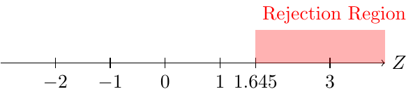
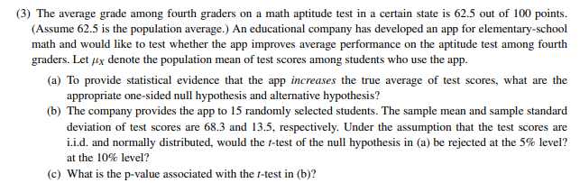
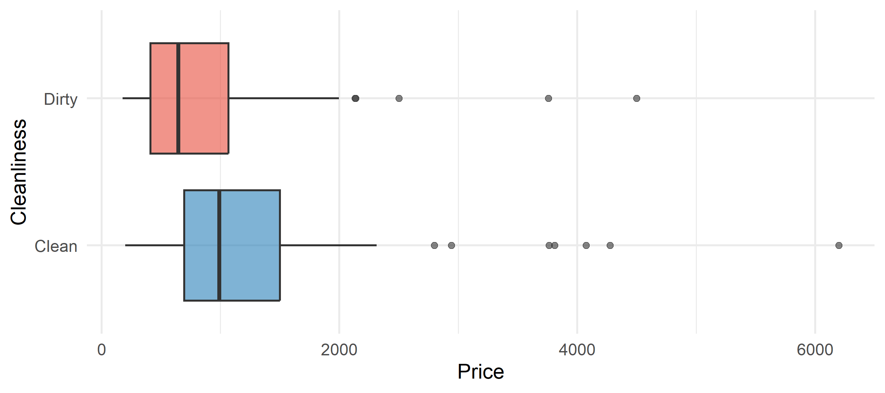
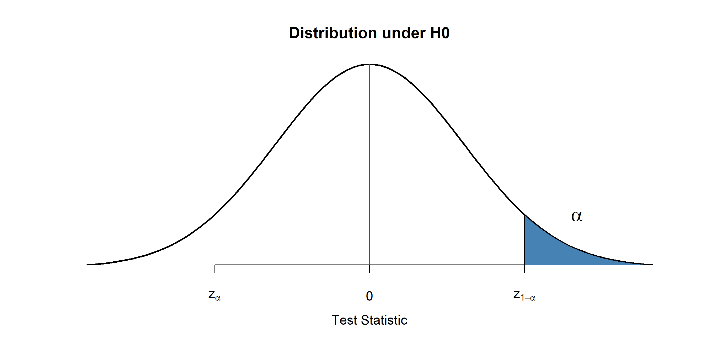
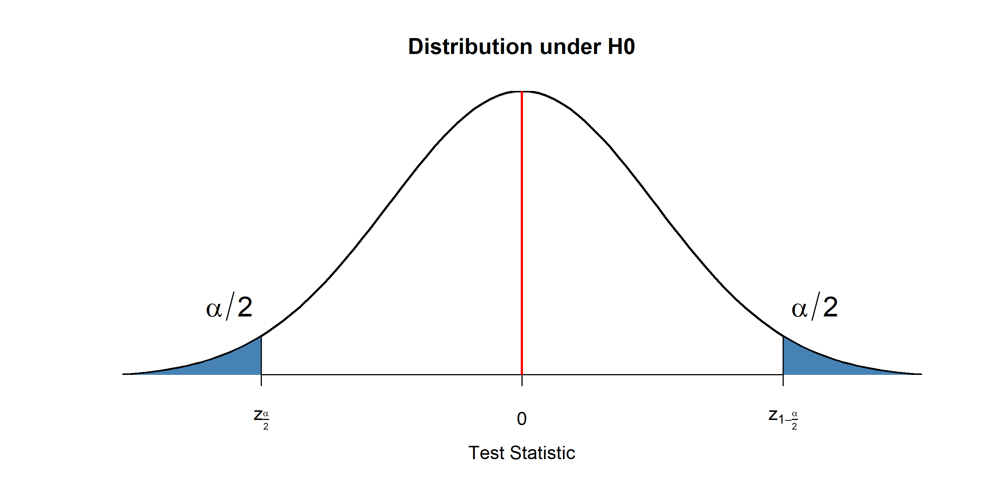
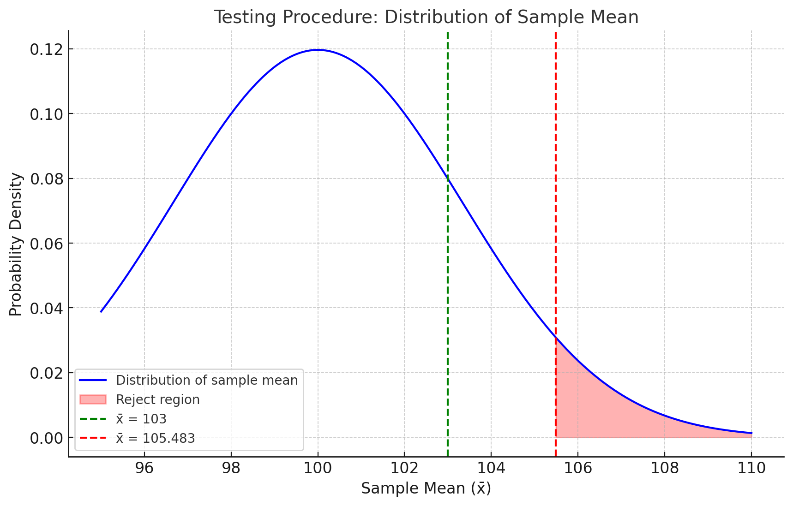
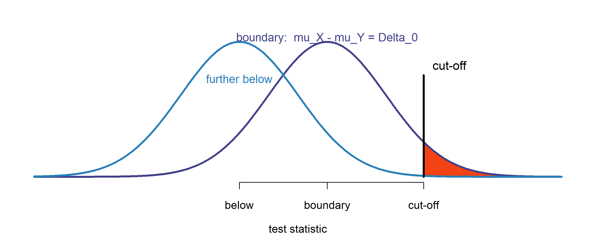
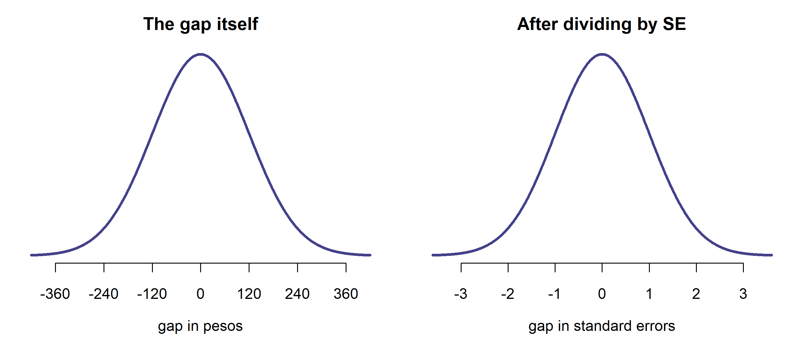
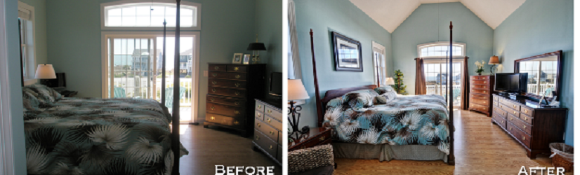

Week 6 — Hypothesis testing
Business Forecasting
Where we are
Describing data → Reasoning under uncertainty → Regression → Time series forecasting
Reasoning under uncertainty. Last week: a range around an estimate. This week: testing a claim about a parameter, and what a p-value does and does not tell you.
- This week (Testing I): one-sample hypothesis testing — hypotheses, test statistic, rejection region, Type 1 & 2 errors, power, and p-values.
1 · What a hypothesis test is
A claim about a population, and a rule for deciding whether one sample argues against it.
Hypothesis Testing
Can we get a higher price if cleanliness level is above 4.5?
This is a hypothesis testing question: we see which of two competing hypotheses is more likely given the data.
- Hypothesis is a claim about a parameter or a distribution.
- \(H_0\) Null Hypothesis: the claim to be tested, the skeptical perspective.
- Prices of clean and dirty apartments are equal
- \(H_0: \mu_c=\mu_d\)
- \(H_A\) Alternative Hypothesis: an alternative claim under consideration.
- Prices of clean apartments are higher
- \(H_A: \mu_c>\mu_d\)
- Assume the null is true and see if the data reject it in favor of the alternative.
- You either reject the null, or fail to reject it (never “accept” it).
Hypothesis testing: more examples
Some examples of hypotheses:
- You released a promotion (10% off) to some customers. Do they spend a different amount than those who didn’t get it?
- \(H_0: \mu_p = \mu_n\) (promotion group spends the same)
- \(H_A: \mu_p \neq \mu_n\) (promotion group spends a different amount)
- Your courier’s contract promises an average delivery time of 100 minutes. You can claim a discount only if you prove they are slower. Is the true mean delivery time above 100 minutes?
- \(H_0: \mu = 100\) (the courier delivers as promised)
- \(H_A: \mu > 100\) (the courier is slower than promised)
Hypothesis testing: why a test at all?
- Suppose we time our sample of 36 deliveries and get a mean of 103 minutes. That is above the promised 100.
- Why would we need a fancy test? Why not claim the discount right away?
- Because we only have a sample, but we want to learn about the population parameter!
- Maybe those 36 deliveries averaged 103 minutes, while across all the courier’s deliveries the true mean is 100 or less.
- That is the whole job of a test: decide whether the gap we see is a real difference in the population, or just sampling noise.
- Hypotheses are always about parameters! Never about sample statistics.
🖊️ Exercise 1 — State the hypotheses
A report claims the true mean monthly electricity bill of Mexican households is 200. We want to test whether it differs from 200. Which pair states the hypotheses correctly?
- \(H_0: \mu = 200\) vs \(H_A: \mu \neq 200\)
- \(H_0\): sample mean \(= 200\) vs \(H_A\): sample mean \(\neq 200\)
- \(H_0: \mu \neq 200\) vs \(H_A: \mu = 200\)
- \(H_0: \mu > 200\) vs \(H_A: \mu < 200\)
\(H_0: \mu = 200\) vs \(H_A: \mu \neq 200\).
Hypotheses are always about the population parameter \(\mu\), never the sample mean. “Differs from” is two-sided (\(\neq\)), and the null is the claim being tested (\(\mu = 200\)).
Testing Procedure Summary
- Set up your hypotheses
- Calculate your test statistic
- Check it against the rejection region
- Decision: Reject or fail to reject the null hypothesis
We will now go into the details of each step.
Testing Procedure
A test procedure is a rule based on sample data for deciding whether to reject the null.
It relies on two elements:
- Test statistic
- A function of the sample data that summarizes evidence for or against the hypothesis
- We know how it is distributed under the null (e.g. standardized mean)
- Rejection region
- Values of the test statistic for which we reject the null
- These are values that are very unlikely under the null hypothesis
- Typically threshold-based: reject \(H_0\) if the test statistic > k
- Values of the test statistic for which we reject the null
2 · Where the decision rule comes from
One courier, one sample, and the distribution of results you would see if the claim were true.
Testing Procedure: Example
The courier contract again: you can claim the discount only by showing the mean delivery time is above 100 minutes. No evidence, no discount — so “above 100” is the claim that has to be proven, which makes it the alternative.
You time \(n=36\) deliveries. From years of records the standard deviation is known, \(\sigma_x=20\) minutes.
Test statistic: \[\cssId{mt-tstat}{z}=\frac{\cssId{mt-gap}{\bar{x}-100}}{\underbrace{\cssId{mt-se}{\sigma_x/\sqrt 36}}_{SE}}\]
Rejection region: for a 5% significance level, reject if \(z \in \{1.645, \infty \}\)

- tstat: The test statistic: the observed gap divided by the noise you should expect. Read it as “we landed this many standard errors away from the claim”.
- gap: The gap you actually observed — sample mean minus the value the claim says. On its own it means nothing; it only counts once you compare it to the noise.
- se: The standard error: how much a sample mean of this size bounces around from sample to sample by pure luck. It is what the gap is measured against.
The claim we will test
Our running data: deliveries — the courier’s last 36 logged deliveries. One row per delivery; minutes is the door-to-door delivery time.
The contract claims the true mean delivery time is 100 minutes.
Before any test: where is the sample centred, and how variable is it?
🖊️ Exercise 2 — Describe the sample
Using deliveries$minutes, over the \(n = 36\) deliveries:
- Look at the first few rows, so you know what one observation is.
- What is the sample mean, and the sample standard deviation?
- What is the standard error of the mean?
deliveries[1:6, ] shows the first six rows. The standard error of a mean is s / sqrt(n), with n = 36.
A sample mean of about 108.4 minutes, a standard deviation of about 21, and a standard error of about 3.50.
Note the standard deviation: the contract negotiation assumed \(\sigma = 20\), and the data agree with that. Note also the sample size — only 36 — which will matter when we choose a reference distribution.
🖊️ Exercise 3 — The test statistic by hand
Write the test statistic for \(H_0: \mu = 100\) yourself, from the definition \(\dfrac{\bar x - \mu_0}{s/\sqrt n}\).
The numerator is the gap xbar - 100. The denominator is s / sqrt(n).
What did you just measure?
The top of the fraction is the raw gap: the courier averaged 8.4 minutes more than promised. On its own that number decides nothing. Eight minutes is a lot if delivery times barely move, and nothing at all if they swing wildly from job to job.
The bottom of the fraction is exactly that swing: the standard error, 3.5 minutes, is how far the mean of 36 deliveries typically lands from the truth by luck alone.
Dividing one by the other turns minutes into a count that has no units:
\[\text{the sample mean sits } 2.4 \text{ standard errors above } 100.\]
That is what every test statistic in this course does — measure the distance from the null in standard errors. It is the same number whether you work in minutes, hours or seconds, which is why one table of critical values works for every test.
Is 2.4 far?
You know the sample mean sits 2.4 standard errors above 100. Is that far? Nothing so far tells us.
To judge 2.4 we need something to compare it with.
So ask: if the courier really did deliver in 100 minutes on average, what numbers would we get? Some samples of 36 deliveries would land above 100 by luck, some below. Each sample gives a statistic.
Do that many times and you can see which values are ordinary and which are rare. Then look where our 2.4 falls.
🎲 Draw the world where the courier keeps the promise
Every draw is one new sample of 36 deliveries, from a courier whose true mean really is 100 minutes. Nothing is wrong in any of these samples — the only thing moving is luck.
Each draw gives one test statistic, and the chart collects them. Our own audit gave 2.40, the orange line.
Draw a few one at a time, then draw a lot. Where does 2.40 sit?
What you just built
That chart is the distribution of the test statistic when \(H_0\) is true. It is our benchmark: it shows which values are ordinary when the courier is doing nothing wrong.
Two things are now visible:
- samples from an on-time courier pile up around 0, and almost never reach 2.4;
- our audit gave 2.4, out in the thin part.
But you only ever get one sample
We just drew 500 samples. In real life you draw one.
You time 36 deliveries, once. You cannot repeat the audit 500 times to find out which statistics are ordinary and which are strange.
You do not need to. We drew samples here only so you could see the picture. Its shape can be worked out theoretically — on paper, before collecting any data — as soon as you assume \(H_0\) is true.
So the benchmark is something you know in advance, not something you measure. Which distribution it is depends on how large your sample is, and we come back to that shortly.
So how do we decide?
Take the test statistic and compare it with a cutoff.
- Choose a cutoff far out in that picture — a value we would almost never see if the courier were on time.
- Compare our 2.40 with it.
- Past the cutoff → reject \(H_0\) and claim the discount. Not past it → we cannot claim.
Why far out? If the courier really did average 100 minutes, a sample that extreme would almost never happen.
So if we actually observe one, that is evidence against 100 being the true mean.
Either we were very unlucky, or the claim of 100 is wrong. Past the cutoff we take the second explanation.
For example, put the cutoff at 1.645. In the picture you just drew, only about 5 samples in 100 reach that far when the courier is on time.
Our audit gave 2.40, which is past 1.645 → reject \(H_0\), claim the discount.
Had the audit come back at 1.2, we would not have claimed: 1.2 is the kind of number an on-time courier produces all the time.
Two names for the rest of the week:
- the cutoff and everything beyond it → the rejection region
- the share of the benchmark beyond our 2.40 → the p-value
Everything that remains is about where to put the cutoff — and what it costs you when you put it in the wrong place.
3 · The two ways to be wrong
Every cut-off trades one error against the other. Power is what you buy with that trade.
Decision errors
| Do not reject \(H_0\) | Reject \(H_0\) in favor of \(H_A\) | |
|---|---|---|
| \(H_0\) true | Okay | Type 1 Error |
| \(H_A\) true | Type 2 Error | Okay |
- \(H_0\): You are not pregnant
- \(H_1\): You are pregnant

Decision errors: free shipping
Do people spend more if they get free shipping? (\(H_0\): they spend the same)
- Type 1 error: reject null when \(H_0\) is true
- Conclude free-shipping customers spend more, while in reality they spend the same
- Type 2 error: don’t reject null when \(H_A\) is true
- Conclude they spend the same, while free-shipping customers actually spend more
- Trial of a murderer: \(H_0\) innocent, \(H_1\) guilty. Describe error types 1 and 2.
- Type 1: Convict an innocent
- Type 2: Do not convict a murderer
- Probability of a type 1 error is \(\alpha\) — the size or significance level.
- We don’t want to incorrectly reject the null more than \(\alpha \cdot 100\%\) of the time.
- Probability of a type 2 error is \(\beta\) — to calculate it, you need the true \(\mu\).
Probability of type 1 error
In words: how often do we claim the discount from a courier who is actually on time?
\[\cssId{mt-alphadef}{\alpha} = P(\text{reject } H_0 \mid H_0 \text{ is true})\]
- alphadef: Read the bar as “given”. This is not the probability that the null is true — it is how often the test rejects, in the world where the null is true.
- In the courier example, suppose the null is true and the courier really does average \(\mu=100\) minutes.
- You take a sample of 36.
- Say you were unlucky: by chance your 36 deliveries hit bad traffic and \(\bar{x}=106\), so \(z=\frac{106-100}{20/\sqrt{36}}=1.8\).
- You are using the cutoff of 1.645, and \(1.8 > 1.645\), so you claim the discount — but the courier was meeting the contract all along. An error.
- Q: What is the probability the standardized mean of these 36 is in the rejection region (larger than 1.645)?
- What’s the probability of making such an error?
\[\small \cssId{mt-alpha}{\alpha} = \cssId{mt-underH0}{P_{H_0}}(Z > \cssId{mt-zcrit}{1.645})\]
\[\small = 1 - \cssId{mt-Phi}{\Phi}(1.645) = 0.05\]
The whole calculation lives on the test-statistic scale. Under \(H_0\) the statistic is standard normal, so the area above the cutoff is \(\alpha\) — nothing else to compute.
- alpha: The significance level: how often you are willing to reject a null that is actually true. You pick it before seeing the data — usually 5%.
- underH0: The subscript says the probability is computed in a world where the null is true. Everything a test reports is “what would happen if the claim were right”.
- zcrit: The critical value for a one-sided 5% test: exactly 5% of a standard normal sits above 1.645. Past it, we call the result too extreme to blame on luck.
- Phi: The standard normal CDF — the area to the left of a point. This is
pnorm()in R.
🎚️ Move the cutoff and watch α
The curve is the benchmark from before: what the test statistic does when the courier is on time. The shaded tail is the rejection region.
Move the significance level and watch two things: where the cutoff sits, and how wide the shaded tail is.
Probability of type 2 error
In words: how often do we fail to claim from a courier who really is late?
\[\cssId{mt-betadef}{\beta} = P(\text{fail to reject } H_0 \mid H_A \text{ is true})\]
- betadef: The mirror of alpha, but conditioned on the other world. You cannot put a number on it until you say how late the courier actually is.
- \(\beta\) is just an area under a curve — the part of the distribution that lands below the cutoff, where we fail to claim.
- We know how to find areas under a curve: that is what
pnorm()does.
- The one new thing: this curve is not centred at 0. The courier really is slow, so the whole distribution sits further to the right.
- So we do the only thing we need to do — measure how far right it sits, and shift by that much.
- And to measure that, we first have to say how late. Say the courier really averages \(\mu_1 = 110\) minutes.
Trade-off between type 1 and 2 errors
\[\cssId{mt-alpha4}{\alpha} = 1 - \Phi(\cssId{mt-z1alpha4}{z_{1-\alpha}}) \qquad\qquad \cssId{mt-beta4}{\beta} = \cssId{mt-Phi4}{\Phi}(z_{1-\alpha} - \cssId{mt-effect4}{d})\]
Both formulas contain the same critical value \(z_{1-\alpha}\). Moving it moves both numbers — in which directions?
- beta4: The probability of a Type 2 error: the test fails to reject even though the alternative is true. You can only put a number on it once you name a specific true value.
- effect4: How far the truth sits from the claim, in standard errors. Nothing else about the alternative world enters.
- Phi4: The standard normal CDF — the area to the left of a point. This is
pnorm()in R. - alpha4: The significance level: how often you are willing to reject a null that is actually true. You pick it before seeing the data — usually 5%.
- z1alpha4: The one-sided critical value: the point with alpha of the standard normal above it. Choosing alpha is choosing this cut-off — push it further out and Type 1 errors get rarer while Type 2 errors get more common.
Power of a test
- Power is the probability of rejecting if the alternative is true.
- Power differs for every possible value of the alternative.
- Power for a one-sided test:
\[\cssId{mt-power}{Power}=P_{H_A}(Reject)=1-\underbrace{P_{H_A}(\text{Not Reject})}_{\text{type 2 error}}=\cssId{mt-onembeta}{1-\beta}\]
\[\text{Power} = 1 - \cssId{mt-effect5}{\Phi}(\cssId{mt-z1alpha5}{z_{1-\alpha}} - d)\]
- power: Power: the chance the test rejects when the alternative really is true — the chance you actually detect an effect that is there.
- onembeta: If the alternative is true, the test either rejects or it does not, so the two probabilities add to 1. Power and the Type 2 error rate are the same fact stated twice.
- effect5: The standard normal CDF again. Power and beta are the same area read from opposite sides, so one formula gives both.
- z1alpha5: The one-sided critical value: the point with alpha of the standard normal above it. Choosing alpha is choosing this cut-off — push it further out and Type 1 errors get rarer while Type 2 errors get more common.
What drives power
Power increases if: \(n\) increases; the alternative is further from the null; \(\sigma\) decreases; \(\alpha\) increases.
The first two are what you just measured; the last one is the trade-off from Exercise 9, seen from the other side.
4 · The test for one mean
The procedure, run end to end, on the delivery claim.
Single Sample Test for Mean
General idea: test if the parameter equals/exceeds/falls below some value.
- Ex: \(H_0: \mu=3\) vs \(H_A: \mu \neq 3\)
- Test statistic: normalized sample mean
\[\text{test statistic}=\frac{\cssId{mt-xbar}{\bar{X}}-\cssId{mt-mu0}{\mu_0}}{\cssId{mt-se6}{SE}}\]
- SE depends on the estimate of the standard deviation:
- Standard deviation known: \(\small SE=\frac{\sigma}{\sqrt n}\)
- Standard deviation not known: \(\small SE=\frac{s}{\sqrt n}\)
- Rejection region: depends on the distribution
- Large sample or known variance: \(\small Z_{test} \sim N(0,1)\) — critical values from standard normal
- Small sample, normal data: \(\small T_{test} \sim t(n-1)\) — critical values from Student’s t, \(n-1\) df
- xbar: The sample mean — the number your data actually produced. It is an estimate, so it lands somewhere different in every sample.
- mu0: The value the null hypothesis claims. It is the claim on trial, not the truth: the test only asks what the data would look like if this value were correct.
- se6: The standard error: how much a sample mean of this size bounces around from sample to sample by pure luck. It is what the gap is measured against.
Single Sample - Mean - Two Sided Test
Hypothesis: \(H_0: \mu=\mu_0\) and \(H_A: \mu \neq \mu_0\)
Rejection Region: for a test of significance level \(\alpha\), reject
- If large sample or known variance from normal \[\small \cssId{mt-tstat7}{\frac{\bar{X}-\mu_0}{SE}}<\cssId{mt-zlo}{z_\frac{\alpha}{2}} \qquad or \qquad \frac{\bar{X}-\mu_0}{SE}>\cssId{mt-zhi}{z_{1-\frac{\alpha}{2}}}\]
- If small sample from normal \[\small \frac{\bar{X}-\mu_0}{SE}<t_{\cssId{mt-df}{(n-1)},\frac{\alpha}{2}} \qquad or \qquad \frac{\bar{X}-\mu_0}{SE}>\cssId{mt-thi}{t_{(n-1),1-\frac{\alpha}{2}}}\]
Where \(z_{1-\frac{\alpha}{2}}\) and \(t_{(n-1),1-\frac{\alpha}{2}}\) are \(\small (1-\frac{\alpha}{2})\) quantiles of the standard normal and Student’s t with \(n-1\) df.
- tstat7: The test statistic: the observed gap divided by the noise you should expect. Read it as “we landed this many standard errors away from the claim”.
- zlo: The lower cut-off. A two-sided test does not know which direction to look, so it splits alpha into two halves and keeps a rejection region on each side.
- zhi: The upper cut-off, with alpha/2 of the distribution above it. Each tail only gets half of alpha, which is why at 5% this is 1.96 and not 1.645.
- df: Degrees of freedom. The mean was already estimated from the same data, so only n-1 independent pieces are left over to estimate the standard deviation.
- thi: The same cut-off read off Student’s t instead of the normal. Its fatter tails push the cut-off further from zero, which matters when the sample is small.
Single Sample - Mean - Two Sided Test: the picture

Single Sample - Mean - One sided - Case 1
Hypothesis: \(H_0: \mu=\mu_0\) and \(H_A: \mu < \mu_0\)
- This includes any null like \(\mu \geq \mu_0\). Why?
- If you rejected \(\mu_0\) at \(\alpha\), you would reject for sure anything larger than \(\mu_0\).
Rejection Region: for a test of significance level \(\alpha\), reject
- If large sample or known variance from normal \[\small \cssId{mt-tstat10}{\frac{\bar{X}-\mu_0}{SE}}<\cssId{mt-zalpha}{z_\alpha}\]
- If small sample from normal \[\small \frac{\bar{X}-\mu_0}{SE}<t_{\cssId{mt-df10}{(n-1)},\alpha}\]
Where \(z_\alpha\) and \(t_{(n-1),\alpha}\) are \(\small \alpha\) quantiles of the standard normal and Student’s t with \(n-1\) df.
- tstat10: The test statistic: the observed gap divided by the noise you should expect. Read it as “we landed this many standard errors away from the claim”.
- zalpha: The lower-tail critical value, with all of alpha below it. Because nothing is spent on the other tail, it sits closer to zero than the two-sided cut-off: -1.645 rather than -1.96.
- df10: Degrees of freedom. The mean was already estimated from the same data, so only n-1 independent pieces are left over to estimate the standard deviation.
Single Sample - Mean - One sided - Case 1: the picture

- Intuition: never reject if \(\bar{X} \geq \mu_0\); reject if \(\bar{X}\) is sufficiently smaller than \(\mu_0\). If the null is true (\(\mu=\mu_0\)) we reject with probability \[\small P(\cssId{mt-tstat11}{\frac{\bar{X}-\mu_0}{s/\sqrt n}}<\cssId{mt-zalpha11}{z_\alpha})=P(Z<z_\alpha)=\cssId{mt-alpha11}{\alpha}\]
- tstat11: The test statistic: the observed gap divided by the noise you should expect. Read it as “we landed this many standard errors away from the claim”.
- zalpha11: The lower-tail critical value, with all of alpha below it. Because nothing is spent on the other tail, it sits closer to zero than the two-sided cut-off: -1.645 rather than -1.96.
- alpha11: The significance level: how often you are willing to reject a null that is actually true. You pick it before seeing the data — usually 5%.
The launch decision
A fuel-card company is deciding whether to launch a national loyalty programme. Finance say it only breaks even if Mexican households spend more than 200 pesos a week on gasoline, on average.
You have the Households & Environment Survey — real data, 14,505 households, in exam_data$gasoline_spending_weekly.
Should they launch?
🖊️ Exercise 19 — The whole test, start to finish
Work every step yourself.
- Write \(H_0\) and \(H_A\). The company acts only on evidence of “more than 200” — so which side is the alternative?
- The sample mean, the standard deviation, and the standard error.
- The test statistic.
- The 5% cutoff, and your decision.
- The p-value. Would you still launch at \(\alpha = 0.01\)?
- Finally, compute
median(gas). Then write one sentence for the board.
The statistic is (xbar - 200) / se with se = s / sqrt(n). It comes out positive, so the one-sided cutoff is qnorm(0.95) and the p-value is 1 - pnorm(z).
\(H_0: \mu = 200\) against \(H_A: \mu > 200\) — one-sided, because spending below the break-even point triggers no decision at all.
Decision. \(2.045 > 1.645\), so we reject at 5%: the data do support “the average household spends more than 200”. But \(p = 0.020\) is above 0.01, so at \(\alpha = 0.01\) the same data would not reject. A decision this close should not be read as settled.
Then the median lands. It is 0. Six households in ten spend nothing at all on gasoline — they have no vehicle. The mean of 207 comes entirely from the other 39%, who average about 528 pesos a week.
One sentence for the board: “The survey does support an average weekly spend above 200 at the 5% level, but the average is the wrong number for this decision — a fuel loyalty programme cannot enrol the 61% of households that buy no fuel, so it should be sized and priced on the 39% who do.”
Two things worth noticing. The test was statistically significant and commercially misleading at the same time; significance says the mean is above 200, not that the programme is a good idea. And although the variable is 61% zeros and nothing like a normal distribution, the statistic is still fine — with \(n = 14{,}505\) the CLT applies to the sample mean whatever the shape of the data.
5 · P-values
The same decision, reported as a number instead of a yes or no.
P-values
Definition: the p-value is the probability, under the null hypothesis, of obtaining a test statistic at least as extreme as the one computed from the sample.
Depends on: your hypothesis, and the calculated test statistic.
- Suppose under \(H_0\) the test statistic is \(Z_{test} \sim N(0,1)\).
- One-sided tests:
- \(H_A: \mu>\mu_0\): \(\;p\text{-value}=P(Z_{Test} \geq \text{computed statistic})\)
- \(H_A: \mu<\mu_0\): \(\;p\text{-value}=P(Z_{Test} \leq \text{computed statistic})\)
- Two-sided test:
- \(H_A: \mu \neq\mu_0\): \(\;p\text{-value}=2P(Z_{Test} \geq |\text{computed statistic}|)\)
P-values: Example
- Test \(H_0: \mu=5\) vs \(H_A: \mu>5\).
- In a sample of 36 we have \(\bar{x}=5.5\) and \(s=2\).
- The test statistic is distributed normally: \[\cssId{mt-pval}{p\text{-value}}=\cssId{mt-probH0}{P}(Z>\cssId{mt-obsstat}{\frac{5.5-5}{2/6}})=P(Z>1.5)=\cssId{mt-pnum}{0.066}\]
Intuitively: the probability that a statistic we calculated (or a more extreme value) could arise just by chance if the null is true.
- pval: The p-value: assuming the null is true, the probability of getting a test statistic at least as extreme as the one your sample gave you.
- probH0: This probability is computed in the world where the null is true. That is what makes it a p-value — it is not the probability that the null is true.
- obsstat: The statistic your sample actually produced: the observed gap over the standard error. The p-value is the share of the null distribution lying beyond it.
- pnum: 6.6% of samples would look this extreme or more if the claim were right. That is more than 5%, so a test at alpha = 0.05 does not reject.
P-value in two-sided test
- In a two-sided test, the p-value accounts for both tails.
- We double the one-tail probability: \(p\text{-value}=2P(Z \geq |z_{test}|)\).
Interactive visualization: https://rpsychologist.com/pvalue/
🖊️ Exercise 16 — The p-value from the same data
(a) Compute the two-sided p-value for the courier test two ways from your hand-built statistic: once with pnorm(), once with pt(). Which of the two is the right reference here, and how much does the choice matter?
The statistic is positive, so the upper tail is 1 - pnorm(tstat); doubling it gives the two-sided p-value. pt(q, df) is the same idea on Student’s t.
The \(t\) gives 0.022, the normal 0.016.
pt() has fatter tails than pnorm(), so it always gives the larger p-value. With 35 degrees of freedom that gap is real — 0.016 against 0.022, a third larger. The \(t\) is the right one here: we estimated \(\sigma\) from the same 36 deliveries. Using the normal would overstate your evidence. Last week’s samples were in the thousands and the two agreed to the fifth decimal; with 36 observations you must use the \(t\).
(b) The contract is one-sided — you only claim a discount if the courier is slower. Compute the one-sided p-values from that same statistic, for \(H_A: \mu > 100\) and for \(H_A: \mu < 100\), and state how the three p-values relate to each other.
1 - pt(tstat, df = n - 1) is the area above the statistic and pt(tstat, df = n - 1) the area below it. One of those two is the p-value for “greater”, the other for “less”.
“Greater” — the one the contract actually asks about — gives about 0.011, exactly half the two-sided 0.022. The statistic is positive, so all of the relevant probability sits in one tail. “Less” gives about 0.989: the two one-sided p-values add to 1.
This is worth money here. At \(\alpha = 0.01\) the two-sided test does not reject, but the one-sided test does. Committing to the correct direction in the contract, before collecting the data, is what makes the claim stick.
🎲 What a p-value actually counts
The cutoff asked a yes/no question. The p-value asks a sharper one:
if the courier is on time, how often would luck alone hand us a statistic at least as extreme as the one we got?
Draw samples from an on-time courier. Every sample that lands at or beyond our 2.40 gets counted. The p-value is the share that do.
Two things to notice as the count grows:
- the running share settles near 0.011, the one-sided p-value — it is a proportion of samples, nothing more exotic;
- the p-value does not depend on \(\alpha\). It is a property of the data. \(\alpha\) only enters when you compare the two and decide.
Switch to two-sided and the share roughly doubles: now a sample counts if it is that far from 0 in either direction, and the on-time curve is symmetric.
P-values and Test Significance
- In our example we calculated the p-value of 0.066.
- Would a test at \(\alpha=0.05\) reject the null?
- Any test with significance level \(\alpha>p\text{-value}\) would reject the null.
Another way to think about p-values:
- The p-value is the smallest significance level \(\alpha\) at which \(H_0\) can be rejected.

🖊️ Exercise 17 — Decision at α = 0.05
Your two-sided test on the delivery times returned the p-value you computed in Exercise 16. Testing at \(\alpha = 0.05\), what do you conclude?
- Reject \(H_0\) — at \(\alpha = 0.05\) there is evidence the mean delivery time differs from 100
- Fail to reject \(H_0\) — p is above 0.05
- Accept \(H_0\) — the mean equals 100 exactly
- Nothing can be decided without knowing the sample size
Reject \(H_0\) — at \(\alpha = 0.05\) there is evidence the mean delivery time differs from 100.
Rule: reject \(H_0\) when p-value < \(\alpha\). Here \(0.022 < 0.05\), so we reject — though at \(\alpha = 0.01\) the same data does not reject (Exercise 14). We never “accept” \(H_0\); we only reject or fail to reject.
6 · One procedure, four tests
The five steps never change. Only the statistic and its reference distribution do.
The same five steps every time
- State \(H_0\) and \(H_1\).
- Compute the statistic: (estimate − claim) / standard error.
- Find its distribution when \(H_0\) is true.
- Compare against the cut-off, or compute the p-value.
- Decide, and say what it means for the business.
Steps 1, 4 and 5 are identical in every test you will meet. Step 2 changes the estimate and the standard error. Step 3 changes the degrees of freedom.
What changes from test to test
| Test | \(H_0\) | Statistic | Reference |
|---|---|---|---|
| One mean | \(\mu = \mu_0\) | \(\dfrac{\bar{x}-\mu_0}{s/\sqrt{n}}\) | \(t_{n-1}\) |
| Two means | \(\mu_X - \mu_Y = 0\) | \(\dfrac{\bar{x}-\bar{y}}{\sqrt{s_X^2/n + s_Y^2/m}}\) | \(t_{v}\), Welch \(v\) |
| Paired | \(\mu_d = 0\) | \(\dfrac{\bar{d}}{s_d/\sqrt{n}}\) | \(t_{n-1}\) |
| Correlation | \(\rho = 0\) | \(\dfrac{\hat{\rho}}{\sqrt{(1-\hat{\rho}^2)/(n-2)}}\) | \(t_{n-2}\) |
- Every statistic has the same shape: how far from the claim, divided by how much it wobbles.
- Only the middle two columns change. Steps 1, 4 and 5 are the same every time.
- Use the standard normal instead of \(t\) once the sample is large.
Which test does the question call for?
| The question says | The test |
|---|---|
| One group, one claimed value | One mean |
| Two separate groups of units | Two means |
| The same units measured twice | Paired |
| Two columns, do they move together | Correlation |
The trap is the third row. Two columns of numbers are paired only when row \(i\) is the same unit in both. If the rows are different people, it is a two-sample problem.
Choosing the Appropriate Test
The choice of test statistic and rejection region depends on:
- Type of data we are testing?
- Single sample: \(H_0: \mu=\mu_0\) vs \(H_A: \mu \neq \mu_0\)
- Two independent samples: \(H_0: \mu_{s1}=\mu_{s2}\) vs \(H_A: \mu_{s1} \neq \mu_{s2}\)
- Paired data: \(H_0: \mu_{d1}=\mu_{d2}\) vs \(H_A: \mu_{d1} \neq \mu_{d2}\)
- Can we estimate the standard deviation well?
- Yes: large sample, or known standard deviation
- No: small sample but normal distribution
7 · Two means
Two groups of listings, and whether the gap between them is bigger than luck.
Can we charge more for a clean apartment?
You run Airbnbs in Mexico City: 200 listings, split into Clean (cleanliness score above 4.5) and Dirty.
- clean listings average 1,245 pesos a night
- dirty listings average 869 pesos a night
A gap of 377 pesos — in these 200 listings.
Is the true mean price of clean apartments higher than the true mean price of dirty ones?
Why the gap alone settles nothing
You are not comparing two numbers. You are comparing two samples.
Take any 200 listings, split them into two halves at random, and the two averages will still come out different. Never exactly 0.
So the question is not “is there a gap?” — there always is. It is:
is 377 pesos bigger than the gap luck alone would have produced?
And now both sides carry noise, so what we compare against has to account for both.
Two samples and the difference in means
Two iid samples, independent of each other, from two populations \(X_1,..,X_n\) and \(Y_1,..,Y_m\).
General idea: test the difference between population means.
- \(H_0: \mu_X-\mu_Y=100\) vs \(H_A: \mu_X-\mu_Y \neq 100\)
- your shop charges a flat 100-peso surcharge to deliver outside the city. Does an out-of-city delivery actually cost you 100 pesos more? (\(X\) = cost of an out-of-city delivery, \(Y\) = cost of a city one.) Charge too little and you subsidise those orders; too much and you are driving customers away for nothing.
- \(H_0: \mu_X-\mu_Y=0\) vs \(H_A: \mu_X-\mu_Y>0\)
- our apartments, with \(X\) = the price of a clean listing and \(Y\) = a dirty one: “cleanliness does not change the price” against “clean listings are more expensive” — this is our question
- Test for no difference: \(H_0: \mu_X-\mu_Y=0\) vs \(H_A: \mu_X-\mu_Y \neq 0\)
- same null, but now a gap in either direction counts as evidence
- Test statistic: normalized difference in sample means
\[\small \text{test stat}=\frac{\cssId{mt-diff}{\bar{X}-\bar{Y}}-\overbrace{\cssId{mt-delta0}{(\mu_{X,0}-\mu_{Y,0})}}^{\Delta_0}}{\cssId{mt-se-2s}{SE}}=\frac{\bar{X}-\bar{Y}-\Delta_0}{SE}\]
\(\Delta_0\) is whatever the null claims the gap is: 100 pesos for the surcharge, 0 for the apartments. Most tests you meet use \(\Delta_0 = 0\), but it does not have to — it is whatever number the business has already committed to.
- diff: The gap you actually observed between the two sample means. It is one number from one experiment, and it would come out differently on a rerun.
- delta0: The difference the null claims — usually 0, meaning “the two populations are the same”. It is the claim on trial, not the truth.
- se-2s: The standard error of the difference: how much that gap wanders from experiment to experiment by pure luck. It is what the gap is measured against.
How much does the gap bounce around?
We have the gap \(\bar X - \bar Y\). To judge it we need to know how far it wanders from sample to sample.
Each mean carries its own noise:
\[Var(\bar X) = \frac{\sigma_X^2}{n} \qquad\qquad Var(\bar Y) = \frac{\sigma_Y^2}{m}\]
The two samples are independent, so the variances add — even though we subtract the means:
\[\cssId{mt-varadd}{Var(\bar X - \bar Y)} = Var(\bar X) + Var(\bar Y) = \frac{\sigma_X^2}{n} + \frac{\sigma_Y^2}{m}\]
The standard error is the square root of that:
\[SE = \sqrt{\frac{\sigma_X^2}{n} + \frac{\sigma_Y^2}{m}}\]
We almost never know \(\sigma_X\) and \(\sigma_Y\), so we use what the samples give us:
\[\cssId{mt-sehat2}{\widehat{SE}} = \sqrt{\frac{s_X^2}{n} + \frac{s_Y^2}{m}}\]
Careful: variances add, standard errors do not. Never write \(SE_X + SE_Y\), and never subtract them just because the means were subtracted.
- varadd: Two independent sources of noise both make the gap wobble, so their variances add. Subtracting the means does not subtract the noise — it piles it up.
- sehat2: The hat says these are estimates: the two population standard deviations have been replaced by the two sample ones. That substitution is what forces us onto Student’s t when samples are small.
Which gaps count as too big?
Put the pieces together and the statistic is
\[t = \frac{\bar X - \bar Y - \Delta_0}{\widehat{SE}}\]
Suppose it comes out at 3.2. Is that too big?
We cannot say yet. A number on its own decides nothing.
We first need to know how this statistic behaves when \(H_0\) is true — which values are ordinary, and which almost never happen.
What the statistic does when \(H_0\) is true
The CLT gives each sample mean a normal shape:
\[\bar{X} \sim N\!\left(\mu_X,\ \frac{\sigma_X^2}{n}\right) \qquad and \qquad \bar{Y} \sim N\!\left(\mu_Y,\ \frac{\sigma_Y^2}{m}\right)\]
Subtract two independent normals and you get a normal again — centred on the true gap, with the variance we just built:
\[\cssId{mt-diffnorm}{\bar{X}-\bar{Y}} \sim N\!\left(\mu_X-\mu_Y,\ \frac{\sigma_X^2}{n}+\frac{\sigma_Y^2}{m}\right)\]
If \(H_0\) is true that centre is \(\Delta_0\). Subtract it, divide by the standard error:
\[\frac{\bar{X}-\bar{Y}-\Delta_0}{\widehat{SE}} \sim \cssId{mt-null01}{N(0,1)}\]
- diffnorm: A difference of two independent normals is normal again. That is what makes the two-sample problem no harder than the one-sample one.
- null01: Under the null the statistic is a standard normal whatever the data measured — pesos, minutes, kilograms. That is why one table of cut-offs serves every test.
What if the samples are small?
We swapped \(\sigma_X, \sigma_Y\) for \(s_X, s_Y\). With plenty of data that costs nothing.
With few observations \(s\) is itself noisy. Sometimes it comes out too small, which makes the statistic too big — so extreme values happen more often than a normal would predict.
Fatter tails. So we compare against Student’s \(t\) instead, with \(v\) degrees of freedom.
How many degrees of freedom?
Both groups here hold 100 listings, so \(n = m = 100\). Two ways to get \(v\):
- Proper, complex (and annoying):
\[\small \cssId{mt-welchv}{v}=\frac{\left(\cssId{mt-varsum}{\frac{s_X^2}{n}+\frac{s_Y^2}{m}}\right)^2}{\cssId{mt-welchden}{\frac{(s_X^2/n)^2}{n-1}+\frac{(s_Y^2/m)^2}{m-1}}}\]
Round down to the nearest integer. For the apartments this needs \(s_X\) and \(s_Y\) as well — the two price standard deviations — so we cannot fill it in until we have looked at the data.
- Simple, approximate shortcut:
\[v=\cssId{mt-vmin}{min(n-1,m-1)}\]
For the apartments that is \(\min(99,\ 99) = 99\) — the sample sizes alone are enough. In Exercise 8 you will see how far it sits from the proper number.
- welchv: The Welch degrees of freedom: how much t-distribution tail you are entitled to when the two groups have different variances and different sizes. It is not a count, so it need not be a whole number.
- varsum: The squared standard error of the difference — the very same two pieces that sit in the denominator of the test statistic.
- welchden: Each group also contributes uncertainty about its own variance. The smaller, noisier group dominates this sum, and that is what drags the degrees of freedom down.
- vmin: The safe shortcut: pretend you have only as much information as the smaller group. It understates the real v, so the cut-off sits a little too far out and the test errs on the cautious side.
Meet the data
Sample_list holds the 200 Mexico City listings from the opening question. Three columns matter:
price— the nightly price in pesosreview_scores_cleanliness— the guest cleanliness rating, 1 to 5clean—TRUEwhen that rating is above 4.5,FALSEotherwise
Run this to see the two groups. Press Run — R runs in your browser.
100 listings on each side. Sample_list$price[Sample_list$clean == TRUE] keeps only the clean ones — subset first, then summarise. Every group comparison in this deck is built that way.
🖊️ Exercise 2 — The whole two-sample test
Test whether clean listings are priced differently from dirty ones. Work every step.
- The two group means, and the gap between them.
- The standard error of that gap.
- The test statistic.
- The degrees of freedom, using the shortcut \(v=\min(n-1,m-1)\).
- The two-sided cut-off at \(\alpha = 0.05\), and your decision.
- The two-sided p-value.
The standard error of a gap adds the two variances: sqrt(var(clean)/n + var(dirty)/m). qt(0.975, df) is the two-sided cut-off, and the p-value of a positive statistic is 2 * (1 - pt(tstat, df)).
clean <- Sample_list$price[Sample_list$clean == TRUE]
dirty <- Sample_list$price[Sample_list$clean == FALSE]
n <- 100
m <- 100
mean(clean) # 1245.43
mean(dirty) # 868.70
gap <- mean(clean) - mean(dirty)
gap # 376.73
SE <- sqrt(var(clean)/n + var(dirty)/m)
SE # 118.57
tstat <- gap / SE
tstat # 3.177
v <- min(n - 1, m - 1)
v # 99
qt(0.975, df = v) # 1.984
2 * (1 - pt(tstat, df = v)) # 0.00198Decision. \(3.177 > 1.984\), so we reject \(H_0\) at 5%: the two groups are not priced the same. The p-value is about 0.002 — a gap this large would turn up by luck in about two samples in a thousand.
In pesos: clean listings go for about 377 more per night, and the evidence that the true gap is not zero is strong.
The two groups, side by side
| n | Mean | SD | |
|---|---|---|---|
| Clean | 100 | 1245.4 | 961.9 |
| Dirty | 100 | 868.7 | 693.3 |

- The clean group’s standard deviation (962) is larger than the dirty one’s (693).
- The boxplot shows why: a long right tail of very expensive clean listings.
- Two groups with different standard deviations is the normal case — which is exactly why the standard error keeps them separate instead of pooling them.
Pooled or Welch?
- Pooled (\(v = n + m - 2\)) assumes \(\sigma_X = \sigma_Y\) and averages the two sample variances into one. Cheap, and wrong when the two standard deviations differ.
- Welch makes no such assumption, and pays for it with a fractional \(v\). It is the safe default whenever the two standard deviations might differ.
- The exam shortcut \(v = \min(n-1, m-1)\) is deliberately conservative: fewer df → fatter tails → you reject slightly less often than you should. Safe, never anti-conservative.
Exercise: McDonald’s vs Burger King
We suspect Burger King has larger caloric content for kids’ meals.
| Sample | n | Sample Mean | Sample Standard Deviation |
|---|---|---|---|
| McDonald | 9 | 475 | 230 |
| Burger King | 16 | 520 | 180 |
- State the null and alternative hypothesis
- Calculate the value of the test statistic
- Determine the appropriate number of degrees of freedom
- Calculate the p-value; at which \(\alpha\) do we reject?
🖊️ Exercise 9 — Small samples: does the df choice matter?
Same job as Exercise 8, but now \(n = 9\) and \(m = 16\) — small enough that the t distribution really bites.
- Write \(H_0\) and \(H_A\) for the claim “Burger King meals have more calories”.
- Compute the SE and the test statistic.
- Compute both degrees of freedom: the Welch formula and \(\min(n-1, m-1)\).
- Compute the one-sided p-value under each. How far apart are they?
- At \(\alpha = 0.05\), does the choice of df change your decision?
Reuse the Welch formula from Exercise 8. The claim “Burger King has more” written as McDonald’s minus Burger King is \(H_A: \mu_M - \mu_B < 0\), so the one-sided p-value is the lower tail: pt(tstat, df).
n_m <- 9; mean_m <- 475; sd_m <- 230
n_b <- 16; mean_b <- 520; sd_b <- 180
A <- sd_m^2/n_m
B <- sd_b^2/n_b
SE <- sqrt(A + B)
SE # 88.9
tstat <- (mean_m - mean_b) / SE
tstat # -0.506
v_welch <- (A + B)^2 / (A^2/(n_m - 1) + B^2/(n_b - 1))
v_welch # 13.6
v_short <- min(n_m - 1, n_b - 1)
v_short # 8
pt(tstat, df = v_welch) # 0.310
pt(tstat, df = v_short) # 0.313\(H_0: \mu_M - \mu_B = 0\) against \(H_A: \mu_M - \mu_B < 0\). \(SE = 88.9\) and \(t = -0.51\) — barely half a standard error away from zero.
Welch gives \(v = 13.6\); the shortcut gives \(v = 8\). The p-values are 0.310 and 0.313 — the df choice moves the answer by three thousandths. Both are nowhere near 0.05, so we fail to reject: a 45-calorie gap measured on 9 and 16 meals is indistinguishable from noise. Notice what actually drove the verdict — the sample size, not the df formula.
8 · Paired data
The same units measured twice. Pairing removes the differences between units.
Paired data
Sometimes we have only one set of individuals or objects, but two (or more) observations per each.
Example: employee productivity — two observations per employee: productivity working from home and working from the office.
Example: sales at Walmart and Soriana in each neighborhood — two observations per neighborhood.
Paired data — setup
We have a set of independent pairs of data \((X_1,Y_1),(X_2,Y_2),..., (X_n,Y_n)\).
Observations within a pair are not necessarily independent!
- Some productive workers are productive both at home and in the office; some unproductive are unproductive in both.
We observe the difference for each individual: \(X_i-Y_i=d_i\).
We look at the population value of that difference: \(\mu_X-\mu_Y=\Delta\).
- Check if the means are the same: \(\Delta=0\) (no difference in productivity)
- Or mean \(X\) is bigger than mean \(Y\): \(\Delta>0\)
Paired data — test statistic
Null hypothesis: \(H_0: \Delta=\Delta_0\)
Test Statistic is:
\[\text{test statistic}=\frac{\overbrace{\cssId{mt-dbar}{\bar{X}-\bar{Y}}}^{\bar{d}}-\cssId{mt-delta0-pair}{\Delta_0}}{\cssId{mt-sed}{SE}}=\cssId{mt-tstat-pair}{\frac{\bar{d}-\Delta_0}{SE}}\]
- dbar: The average of the within-pair differences. Because each person is compared with themselves, everything that makes people differ from one another cancels before you ever take the mean.
- delta0-pair: The difference the null claims — usually 0, meaning “the two populations are the same”. It is the claim on trial, not the truth.
- sed: The standard error built from the standard deviation of the differences alone. Pairing removes the person-to-person variation, so this is typically far smaller than the two-sample standard error on the same data — which is why the paired test detects effects the unpaired one misses.
- tstat-pair: The test statistic: the observed gap minus the gap the null claims, divided by the noise you should expect. Read it as “we landed this many standard errors away from the claim”.
Note on the standard error — it’s not the same formula as for two independent samples: \(Var(X_i-Y_i) \neq Var(X_i)+Var(Y_i)\)
We just calculate it from the differences:
- If we know the variance, \(SE=\frac{\sqrt{var(d_i)}}{\sqrt n}=\frac{\sigma_d}{\sqrt n}\)
- If we don’t: \(SE=\frac{s_d}{\sqrt n}\)
Paired or unpaired data?
- We want to know if Intel’s stock and Southwest Airlines’ stock have similar rates of return. We take a random sample of 50 days and record both stocks on those same days.
- Paired
- We randomly sample 50 items at Target and note each price. Then we visit Walmart and collect the price for each of those same 50 items.
- Paired
- A school board wants to know if average SAT scores differ between two high schools. They take a simple random sample of 100 students from each school.
- Not paired
Same 40 employees, measured twice
productivity holds 40 employees, each with an office score and a home score: the same person appears in both columns.
Some people are simply more productive than others — at home and at the office. That person-level variation is in both columns, and it is not what you are trying to measure.
The question is whether working from home changes output. Two ways to ask it:
- treat the 80 numbers as two independent samples of 40, or
- work with the 40 differences
home - office.
Same 80 numbers. Should the two routes agree?
🖊️ Exercise 18 — Ignore the pairing, then use it
- Look at the first few rows of
productivity, and the correlation between the two columns. - Build the unpaired standard error from
sd(productivity$home)andsd(productivity$office), and the statistic that goes with it. - Now build
d <- productivity$home - productivity$office, its standard errorsd(d)/sqrt(40), and the paired statistic. - Compare the two standard errors. Which is smaller, and by how much?
The unpaired SE adds the two variances: sqrt(var(productivity$home)/40 + var(productivity$office)/40). The paired SE uses only the standard deviation of the differences: sd(d)/sqrt(40). Each statistic is the same gap mean(d) divided by its own standard error.
productivity[1:6, ]
cor(productivity$home, productivity$office) # 0.95
d <- productivity$home - productivity$office
mean(d) # 3.27
SE_unpaired <- sqrt(var(productivity$home)/40 + var(productivity$office)/40)
SE_unpaired # 3.76
SE_paired <- sd(d)/sqrt(40)
SE_paired # 0.81
mean(d) / SE_unpaired # 0.87
mean(d) / SE_paired # 4.02
sd(productivity$home) # 16.4
sd(productivity$office) # 17.2
sd(d) # 5.1Same 80 numbers, two verdicts. Unpaired: \(t = 0.87\), \(p = 0.39\) — fail to reject. Paired: \(t = 4.02\), \(p = 0.00026\) — reject decisively. Routes 3 and 4 agree to the last digit, because a paired test is a one-sample test on the differences.
The reason is in the last line. Each column has a standard deviation near 17, so the unpaired SE is about 3.8. But the two columns correlate at 0.95, and the differences have a standard deviation of only 5.1, giving a paired SE of about 0.81 — nearly five times smaller. Pairing subtracts the person-level variation out of both columns before measuring anything, so all that is left is the effect you care about.
Design lesson: when you can measure the same unit twice, do it. Throwing the pairing away is throwing away most of your power.
Why pairing wins
- \(Var(X_i - Y_i) = Var(X_i) + Var(Y_i) - 2\,Cov(X_i, Y_i)\).
- Positively correlated pairs → that last term is large and positive → the variance of the difference collapses.
- The independent-samples formula silently sets \(Cov = 0\) and inflates the SE.
- Cost: the paired test has \(n - 1\) df instead of roughly \(n + m - 2\). Almost always a bargain.
9 · Correlation
Whether two variables move together, and what that still cannot tell you.
Does advertising move sales?
A third business. branches holds 120 branches of a Mexican retail chain, one row per branch, with last month’s figures:
ad_spend— local advertising spend, in thousands of pesossales— sales, in thousands of pesosstaff— number of employees
Head office wants to know whether branches that advertise more actually sell more — and neither column splits into groups. Both are numbers.
So this is not a difference in means. The question is whether the two move together.
Hypothesis testing for correlation
Null hypothesis: \(H_0: \rho = \rho_0\), almost always \(\rho_0 = 0\) — no linear relationship in the population.
Assume normally distributed variables in independent pairs \(\{(a_1,s_1), (a_2,s_2),...\}\).
Test statistic and its distribution under the null:
\[\small T_{test}=\frac{\cssId{mt-rhohat}{\hat{\rho}}-\cssId{mt-rho0}{\rho_0}}{\cssId{mt-serho}{\sqrt{\frac{1-\hat{\rho}^2}{n-2}}}} \sim \cssId{mt-dfrho}{t_{n-2}}\]
- rhohat: The correlation measured in your sample. Like any estimate it moves from sample to sample, so a value away from zero is not by itself evidence of a relationship.
- rho0: The correlation the null claims — almost always 0, meaning “no linear relationship in the population”.
- serho: The standard error of the sample correlation. It shrinks as n grows, and also shrinks as the correlation gets stronger, which is why a strong correlation is easy to detect even in a small sample.
- dfrho: Student’s t with n-2 degrees of freedom. Two are spent because the correlation is measured around both sample means, one for each variable.
| your \(H_A\) | reject \(H_0\) when |
|---|---|
| \(\rho \neq \rho_0\) | \(\lvert T_{test}\rvert > t_{n-2,\,1-\alpha/2}\) |
| \(\rho > \rho_0\) | \(T_{test} > t_{n-2,\,1-\alpha}\) |
| \(\rho < \rho_0\) | \(T_{test} < t_{n-2,\,\alpha}\) |
Look before you test
The test assumes the pairs are independent and the relationship is linear. Both are claims about the picture, so draw it first.
🖊️ Exercise 20 — Draw the relationship
- Plot
salesagainstad_spend. - Does the cloud slope? Does the slope look straight, or bent?
- Guess the correlation before you compute it.
plot(x, y) takes the horizontal variable first. Advertising is the thing head office controls, so it goes on the horizontal axis.
The cloud slopes up and looks roughly straight: branches that advertise more do sell more. It is a loose relationship though — at any given advertising level the sales still scatter over hundreds of thousands of pesos.
🖊️ Exercise 21 — Test it
Head office only cares about one direction: more advertising going with more sales. Test at \(\alpha = 0.05\).
- Write \(H_0\) and \(H_A\).
- The sample correlation.
- The test statistic, using \(t = \hat\rho\sqrt{\tfrac{n-2}{1-\hat\rho^2}}\).
- The one-sided cut-off, your decision, and the p-value.
- Then: \(\hat\rho^2\). How much of the variation in sales does advertising explain?
cor(a, s) gives \(\hat\rho\). The statistic comes out positive, so the upper-tail cut-off is qt(0.95, df = n - 2) and the p-value is 1 - pt(tstat, df = n - 2).
\(H_0: \rho = 0\) against \(H_A: \rho > 0\) — more advertising goes with more sales.
Decision. \(5.317 > 1.658\): reject \(H_0\). Branches that advertise more really do sell more, and a correlation this strong would essentially never appear by luck.
But read \(\hat\rho^2\) before you act. Advertising explains about 19% of the variation in sales. The other 81% is location, size, staff, competition, the local economy. More advertising will help — it will not turn a bad branch into a good one.
And none of this is causal. Big branches may simply both advertise more and sell more, with size driving each. The test says the two move together; it does not say which one moves the other.
What a correlation test cannot do
- It measures linear movement only. A strong bent relationship can give \(\hat\rho\) near 0.
- It says nothing about cause.
- Significance is about \(\rho \neq 0\), not about \(\rho\) being large. With \(n = 120\) even a correlation of 0.18 would reject.
Which is the whole lesson: a test tells you a relationship is there, and \(\hat\rho^2\) tells you whether it is worth anything.
Exam spotlight — Fall 2025 Midterm 1
Real Midterm 1 questions on the Households & Environment Survey (\(n = 13{,}255\)). We solve these in class on Data/households_environment.rda (object exam_data).
Exam question — Q9 & Q10
Q9. A report claims the true mean monthly electricity bill is 200. Your sample mean is 206. Why can’t we immediately conclude the report is wrong?
Q10. State \(H_0\) and \(H_A\) for testing whether the true mean monthly electricity bill differs from 200.
Exam question — Q12
Q12. Using the electricity-bill data (\(n = 13{,}255\)), compute the test statistic for \(H_0:\mu=200\) vs \(H_A:\mu\neq 200\), and give your decision.
Do it here, exam-style: statistic first, then the decision at two significance levels.
The critical values for a two-sided test are qnorm(1 - alpha/2), and qnorm() takes a vector, so one call gives both. Compare each with the statistic.
\(z \approx 2.02\): past 1.96, so we reject at 5%; short of 2.576, so we fail to reject at 1%. With \(n = 13{,}255\) the normal and \(t\) critical values agree to three decimals.
Practice now: the one-sample z/t problems in the Week 6 (Testing I) set at the end of this deck.
Exam question — Fall 2025 Midterm 1
Q16. Design an A/B test to measure whether a change causes an increase in an outcome: define the treatment and control groups, the randomization, the outcome, and the two-sample test you would run.
We frame this in class using Data/households_environment.rda (object exam_data):
- Randomize units into treatment vs control → the groups are, on average, identical except for the treatment.
- Collect the outcome, then run a two-sample difference-in-means test (\(H_0:\mu_T-\mu_C=0\)).
Practice now: the two-sample and A/B-design problems in the Week (Testing II) set.
🖊️ Exercise 23 — The whole week, one question
You advise the Airbnb host portfolio. The owner asks:
“We are considering paying for a deep-clean service on every listing. Is it worth it — and how sure are you?”
Answer with a number, a picture, and one sentence. Then add the sentence the owner will not like.
The gap is mean(clean) - mean(dirty); its standard error is sqrt(var(clean)/100 + var(dirty)/100), and the interval is the gap plus and minus qt(0.975, df = 180) * SE. boxplot(price ~ clean_label, data = Sample_list) makes the picture. The design question — observational vs randomized — is what part 4 is about.
clean <- Sample_list$price[Sample_list$clean == TRUE]
dirty <- Sample_list$price[Sample_list$clean == FALSE]
gap <- mean(clean) - mean(dirty)
gap # 376.7
SE <- sqrt(var(clean)/100 + var(dirty)/100)
SE # 118.6
gap + c(-1, 1) * qt(0.975, df = 180) * SE # 142.8 610.7
tstat <- gap / SE
2 * (1 - pt(tstat, df = 180)) # 0.00175
boxplot(price ~ clean_label, data = Sample_list, horizontal = TRUE,
col = c("#2980b9", "#e74c3c"), xlab = "Price", ylab = "")The number: clean listings average about 377 MXN more per night, with a 95% CI of roughly (143, 611) and a p-value of 0.0017 — the gap is far too large to be chance.
One sentence for the owner: “Clean listings in our sample earn about 377 pesos more per night, and we can be 95% confident the true gap is at least 143 — so if a deep clean costs less than that per night, the numbers support it.”
The sentence they will not like: this is observational, not an experiment. Nobody randomized which listings got cleaned, so the hosts who keep listings clean may also price better, respond faster and own nicer apartments. To claim the clean causes the extra revenue you would need a randomized experiment — decide by coin flip which listings get the deep clean, then compare.
What you must be able to do this week
| State | Write \(H_0\) and \(H_1\) for a claim about a mean, a difference, or a correlation. |
| Compute | Build the statistic by hand: estimate, claim, standard error, degrees of freedom. |
| Decide | Compare with the cut-off from qnorm/qt, or compute the p-value with pnorm/pt. |
| Choose | Say which of the four tests a business question calls for, and why. |
| Pair | Recognise when two columns are the same units measured twice, and test the differences. |
| Report | Give the number, the decision, and one sentence the manager can act on. |
Appendix — optional (extra detail)
Derivations, the second worked example, and the material we did not cover in class.
Where exactly does 1.645 come from?
The rejection region for a one-sided test at 5% is a piece of the standard normal — the piece that holds 5% of the area on the right.
It is the value with exactly 5% of the curve above it: qnorm(0.95).
How far is the truth from the claim?
Measure the gap the way we measure everything — in standard errors:
\[\cssId{mt-dgap}{d} = \frac{\mu_1 - \mu_0}{\sigma/\sqrt{n}} = \frac{110 - 100}{20/\sqrt{36}} = 3\]
- dgap: How far the truth sits from the claim, in standard errors. It is the only thing about the alternative world the test ever needs.
- Same shape, same standard deviation — the blue curve is just the purple one slid 3 standard errors right.
- The cutoff does not move: it was fixed by \(\alpha\), before anyone knew the truth.
- Blue is \(\beta\): the courier really is late, but the statistic still lands short of the cutoff, so you do not claim.
- Red is \(\alpha\): the courier is on time, but the statistic overshoots anyway.
\(\beta\) is the area of the shifted curve lying below the cutoff — and the shift is the only thing that changed, so we just read the normal table \(d\) further along:
\[\cssId{mt-betacalc}{\beta} = \cssId{mt-Phibeta}{\Phi}(z_{1-\alpha} - d) = \Phi(1.645 - 3) = \Phi(-1.355) = 0.088\]
- betacalc: No new theory here: shift the curve by d, then read the area below the cutoff. That is all a Type 2 error probability is.
- Phibeta: The standard normal CDF — the area to the left of a point. This is
pnorm()in R.
In R that is one line: pnorm(qnorm(0.95) - 3).
So with a courier who really runs 10 minutes late, this test still misses them about 9 times in 100. Go back to the interactive picture, slide the true mean closer to 100, and that number climbs fast — a small delay is much harder to prove than a large one.
🎚️ What lowering α costs you
Both curves are on. Now move only the significance level, and watch the two shaded areas at the same time.
Set \(\alpha\) to 0.10, then 0.05, then 0.01, and read \(\beta\) off each time.
| \(\alpha\) | cutoff | \(\beta\) | power |
|---|---|---|---|
| 0.10 | 1.282 | 0.043 | 0.957 |
| 0.05 | 1.645 | 0.088 | 0.912 |
| 0.01 | 2.326 | 0.250 | 0.750 |
The two errors move in opposite directions. Demanding more evidence before you claim makes you wrong less often about an on-time courier, and wrong more often about a late one. There is no setting of \(\alpha\) that makes both small.
Now change the sample size instead. That is the one lever that shrinks both at once — which is why the honest answer to “how do I get a better test?” is almost always more data.
What makes a test powerful?
Four things could plausibly matter: the sample size \(n\), how far the truth sits from the null, the population standard deviation \(\sigma\), and the significance level \(\alpha\).
Rather than argue about it — count rejections.
So how do we pick the cutoff?
We have been moving it by hand. In practice you do not choose the cutoff — you choose \(\alpha\), and the cutoff follows.
- \(\alpha\) is the error you can control without knowing the truth: it only needs the null world.
- \(\beta\) and power need a specific alternative, which you never actually know.
- So the convention: fix \(\alpha\) first — usually 0.05 — and let it set the cutoff.
\[\text{choose } \alpha \;\longrightarrow\; \text{cutoff } z_{1-\alpha} \;\longrightarrow\; \text{decision}\]
Everything else this week is that same chain, with a different reference distribution depending on the sample size and the alternative.
General Procedure
- Determine the null and alternative hypotheses
- Collect your sample of independent observations
- Choose the appropriate test
- Calculate the test statistic
- Compare it to the rejection region
- Reject or fail to reject the null hypothesis
Let’s talk about appropriate tests!
Single Sample - Mean - One sided - Case 2
Hypothesis: \(H_0: \mu=\mu_0\) and \(H_A: \mu > \mu_0\)
- This includes any null like \(\mu \leq \mu_0\). Why?
- If you rejected \(\mu_0\) at \(\alpha\), you would reject for sure anything smaller than \(\mu_0\).
Rejection Region: for a test of significance level \(\alpha\), reject
- If large sample or known variance from normal \[\small \cssId{mt-tstat12}{\frac{\bar{X}-\mu_0}{SE}}>\cssId{mt-z1alpha12}{z_{1-\alpha}}\]
- If small sample from normal \[\small \frac{\bar{X}-\mu_0}{SE}>t_{\cssId{mt-df12}{(n-1)},1-\alpha}\]
Where \(z_{1-\alpha}\) and \(t_{(n-1),1-\alpha}\) are \(\small (1-\alpha)\) quantiles of the standard normal and Student’s t with \(n-1\) df.
- tstat12: The test statistic: the observed gap divided by the noise you should expect. Read it as “we landed this many standard errors away from the claim”.
- z1alpha12: The one-sided critical value: the point with alpha of the standard normal above it. Choosing alpha is choosing this cut-off — push it further out and Type 1 errors get rarer while Type 2 errors get more common.
- df12: Degrees of freedom. The mean was already estimated from the same data, so only n-1 independent pieces are left over to estimate the standard deviation.
Single Sample - Mean - One sided - Case 2: the picture

- Intuition: never reject if \(\bar{X} \leq \mu_0\); reject if \(\bar{X}\) is sufficiently larger than \(\mu_0\). If the null is true (\(\mu=\mu_0\)) we reject with probability \[\small P(\cssId{mt-tstat13}{\frac{\bar{X}-\mu_0}{s/\sqrt n}}>\cssId{mt-z1alpha13}{z_{1-\alpha}})=P(Z>z_{1-\alpha})=\cssId{mt-alpha13}{\alpha}\]
- tstat13: The test statistic: the observed gap divided by the noise you should expect. Read it as “we landed this many standard errors away from the claim”.
- z1alpha13: The one-sided critical value: the point with alpha of the standard normal above it. Choosing alpha is choosing this cut-off — push it further out and Type 1 errors get rarer while Type 2 errors get more common.
- alpha13: The significance level: how often you are willing to reject a null that is actually true. You pick it before seeing the data — usually 5%.
🖊️ Exercise 18 — The whole week, one question
You manage the courier contract. It promises an average delivery time of 100 minutes, and the discount clause is one-sided: you can only claim if they are slower. Your director asks:
“Do we invoke the clause, or not?”
Answer with a number and one sentence.
With 36 observations use the \(t\): the one-sided p-value is 1 - pt(tstat, df = 35), and the interval endpoints are xbar + c(-1, 1) * qt(0.975, 35) * se. Delivery times are right-skewed, so check median(mins) too.
One sentence: “Across the 36 timed deliveries the courier averaged 108.4 minutes against a promised 100, and a gap that large would turn up by chance in only about 1% of samples from an on-time courier (one-sided p = 0.011), so we invoke the clause.”
Worth adding for the director: the 95% interval runs from 101.3 to 115.5 minutes, so the evidence says the courier is late but not by how much — anywhere from one minute to a quarter of an hour is consistent with this data. And the median delivery took 105.4 minutes, so the mean is being pulled up by a tail of a few very slow jobs; if the clause is about typical service rather than average service, that is worth raising before invoking it.
The rejection rule
Reject \(H_0\) when the statistic lands in the tail your alternative points to. The statistic is the same number either way — only the distribution you compare it against changes.
| your \(H_A\) | large sample: \(Z_{test}\sim N(0,1)\) | small sample: \(T_{test}\sim t_v\) |
|---|---|---|
| \(\mu_X-\mu_Y \neq \Delta_0\) | \(\lvert Z_{test}\rvert > z_{1-\alpha/2}\) | \(\lvert T_{test}\rvert > t_{v,\,1-\alpha/2}\) |
| \(\mu_X-\mu_Y > \Delta_0\) | \(Z_{test} > z_{1-\alpha}\) | \(T_{test} > t_{v,\,1-\alpha}\) |
| \(\mu_X-\mu_Y < \Delta_0\) | \(Z_{test} < z_{\alpha}\) | \(T_{test} < t_{v,\,\alpha}\) |
At \(\alpha = 0.05\) the normal cut-offs are 1.96 two-sided and 1.645 one-sided. The \(t\) cut-offs always sit a little further out, and close in on these as \(v\) grows.
The two-sided rule splits \(\alpha\) into two halves, so each tail gets only \(\alpha/2\). That is why its cut-off sits further from zero than the one-sided one.
Where exactly do you cut?
The rule says “reject in the tails”. The tails have to be somewhere: two numbers on the horizontal axis, chosen so the shaded area equals \(\alpha\).
For \(\alpha = 0.05\), two-sided: what are those two numbers under \(N(0,1)\)?
And if the sample is small so the statistic follows \(t(v)\) instead — do the cutoffs move in or out?
🖊️ Exercise 1 — Find the cutoffs
- Compute the two cutoffs that leave \(\alpha/2 = 0.025\) in each tail of \(N(0,1)\).
- Compute the same upper cutoff from Student’s t with \(v = 5, 20, 100, 1000\) degrees of freedom, and say which way they move as \(v\) grows.
qnorm(p) returns the value with probability p below it; qt(p, df = v) does the same for Student’s t. Both take vectors, so qnorm(c(0.025, 0.975)) gives both cutoffs and qt(0.975, df = c(5, 20, 100, 1000)) gives all four t cutoffs.
The normal cutoffs are \(\pm 1.96\). The t cutoffs are further out — 2.57 at 5 df, 2.09 at 20 df, 1.98 at 100 — and they close in on 1.96 as \(v\) grows. Fewer degrees of freedom means a fatter tail, so you need a more extreme statistic before you reject.
Two-sided rejection region

Two samples — mean — one-sided — case 1
Hypothesis: \(H_0: \mu_X-\mu_Y=\Delta_0\) and \(H_A: \mu_X-\mu_Y<\Delta_0\)
- This includes any null like \(\mu_X-\mu_Y \geq \Delta_0\). Why?
- If you rejected \(\mu_X-\mu_Y=\Delta_0\) at \(\alpha\), you would reject for sure anything larger than \(\Delta_0\). Why, in a picture →
Rejection Region: for a test of significance level \(\alpha\), reject
- If large sample or known variance from normal \[\small \cssId{mt-tstat-1a}{\frac{\bar{X}-\bar{Y}-(\Delta_0)}{SE}}<\cssId{mt-zalpha-2s}{z_\alpha}\]
- If small sample from normal \[\small \frac{\bar{X}-\bar{Y}-(\Delta_0)}{SE}<t_{\cssId{mt-vdf-1a}{v},\alpha}\]
Where \(z_\alpha\) and \(t_{v,\alpha}\) are \(\small \alpha\) quantiles of the standard normal and Student’s t with \(v\) df.
- tstat-1a: The test statistic: the observed gap minus the gap the null claims, divided by the noise you should expect. Read it as “we landed this many standard errors away from the claim”.
- zalpha-2s: The lower-tail critical value, with all of alpha below it. Because nothing is spent on the other tail, it sits closer to zero than the two-sided cut-off: -1.645 rather than -1.96.
- vdf-1a: The degrees of freedom for a comparison of two groups — the Welch number from the previous slide, not simply n-1.
One-sided rejection region — case 1

- Intuition: never reject if \(\bar{X}-\bar{Y} \geq \Delta_0\); reject if \(\bar{X}-\bar{Y}\) is sufficiently smaller than \(\Delta_0\). If the null is true we reject with probability \[\small P(\frac{\cssId{mt-obsgap}{\bar{X}-\bar{Y}-\Delta_0}}{\cssId{mt-sehat-1a}{\sqrt{s^2_X/n+s^2_Y/ m}}}<\cssId{mt-zalpha-1a}{z_\alpha})=P(Z<z_\alpha)=\cssId{mt-alpha-2s}{\alpha}\]
- obsgap: The observed gap minus the gap the null claims. This is the raw evidence; dividing by the standard error is what turns it into “how many standard errors away”.
- sehat-1a: The same standard error with the unknown population variances replaced by the sample ones. That substitution is what turns the normal reference into a t when the samples are small.
- zalpha-1a: The lower-tail critical value, with all of alpha below it. Because nothing is spent on the other tail, it sits closer to zero than the two-sided cut-off: -1.645 rather than -1.96.
- alpha-2s: The significance level: how often you are willing to reject a null that is actually true. You pick it before seeing the data — usually 5%.
Two samples — mean — one-sided — case 2
Hypothesis: \(H_0: \mu_X-\mu_Y=\Delta_0\) and \(H_A: \mu_X-\mu_Y>\Delta_0\)
- This includes any null like \(\mu_X-\mu_Y \leq \Delta_0\). Why?
- If you rejected \(\mu_X-\mu_Y=\Delta_0\) at \(\alpha\), you would reject for sure anything smaller than \(\Delta_0\). Why, in a picture →
Rejection Region: for a test of significance level \(\alpha\), reject
- If large sample or known variance with normal \[\small \cssId{mt-tstat-1b}{\frac{\bar{X}-\bar{Y}-(\Delta_0)}{SE}}>\cssId{mt-z1alpha}{z_{1-\alpha}}\]
- If small sample from normal \[\small \frac{\bar{X}-\bar{Y}-(\Delta_0)}{SE}>t_{\cssId{mt-vdf-1b}{v},1-\alpha}\]
Where \(z_{1-\alpha}\) and \(t_{v,1-\alpha}\) are \(\small (1-\alpha)\) quantiles of the standard normal and Student’s t with \(v\) df.
- tstat-1b: The test statistic: the observed gap minus the gap the null claims, divided by the noise you should expect. Read it as “we landed this many standard errors away from the claim”.
- z1alpha: The one-sided critical value: the point with alpha of the standard normal above it. All of the significance level goes into this single tail, so it sits closer to zero than 1.96.
- vdf-1b: The degrees of freedom for a comparison of two groups — the Welch number from the previous slide, not simply n-1.
One-sided rejection region — case 2

- Intuition: never reject if \(\bar{X}-\bar{Y} \leq \Delta_0\); reject if \(\bar{X}-\bar{Y}\) is sufficiently larger than \(\Delta_0\). If the null is true we reject with probability \[\small P(\frac{\cssId{mt-obsgap-1b}{\bar{X}-\bar{Y}-\Delta_0}}{\cssId{mt-sehat-1b}{\sqrt{s^2_X/n+s^2_Y/ m}}}>\cssId{mt-z1alpha-1b}{z_{1-\alpha}})=P(Z>z_{1-\alpha})=\cssId{mt-alpha-1b}{\alpha}\]
- obsgap-1b: The observed gap minus the gap the null claims. This is the raw evidence; dividing by the standard error is what turns it into “how many standard errors away”.
- sehat-1b: The same standard error with the unknown population variances replaced by the sample ones. That substitution is what turns the normal reference into a t when the samples are small.
- z1alpha-1b: The one-sided critical value: the point with alpha of the standard normal above it. All of the significance level goes into this single tail, so it sits closer to zero than 1.96.
- alpha-1b: The significance level: how often you are willing to reject a null that is actually true. You pick it before seeing the data — usually 5%.
A second business: the delivery app
A food-delivery app in Mexico City pulled a small audit of recent orders. orders has 25 rows:
channel—"app"or"web", how the order was placedbasket— what the customer spent, in pesos
Small, because pulling and checking each order by hand is expensive. Keep that in mind — it will matter.
14 orders through the app, 11 through the website. Twenty-five in total — nothing like the thousands we had last week.
Should we push customers to the app?
Building and maintaining the app costs money. It is only worth it if app customers actually spend more.
- \(H_0: \mu_{app} - \mu_{web} = 0\) — the channel makes no difference
- \(H_A: \mu_{app} - \mu_{web} > 0\) — app orders are bigger
One-sided: if app baskets turned out smaller, we would drop the idea just as we would if they were equal. Only one direction leads anywhere.
🖊️ Exercise 6 — Is the app basket bigger?
Work the whole test at \(\alpha = 0.05\).
- The two group means and the gap.
- The standard error of the gap.
- The test statistic.
- Degrees of freedom by the shortcut, and the one-sided cut-off.
- Your decision, and the one-sided p-value.
- Now redo step 4 and 5 pretending the samples were large, so the cut-off comes from the normal instead. Does anything change?
One-sided at 5% puts the whole \(\alpha\) in the upper tail: qt(0.95, df) for the t, and qnorm(0.95) for the normal. The p-value of a positive statistic is 1 - pt(tstat, df).
app <- orders$basket[orders$channel == "app"]
web <- orders$basket[orders$channel == "web"]
n <- 14
m <- 11
mean(app) # 292.1
mean(web) # 262.8
gap <- mean(app) - mean(web)
gap # 29.3
SE <- sqrt(var(app)/n + var(web)/m)
SE # 17.09
tstat <- gap / SE
tstat # 1.716
v <- min(n - 1, m - 1)
v # 10
qt(0.95, df = v) # 1.812
1 - pt(tstat, df = v) # 0.0585
qnorm(0.95) # 1.645
1 - pnorm(tstat) # 0.0431The two answers disagree.
- Against the t with 10 df: \(1.716 < 1.812\), so we do not reject. \(p = 0.059\).
- Against the normal: \(1.716 > 1.645\), so we would reject. \(p = 0.043\).
With 25 orders the t is the right one. We estimated both standard deviations from a handful of observations, so the statistic has fatter tails than a normal — and the t cut-off sits further out to account for exactly that.
Using the normal here would have handed the app team a “significant” result the data do not support. This is the whole reason the small-sample case gets its own distribution: with thousands of orders the two cut-offs are almost identical and nobody notices, but with 25 the choice decides the verdict.
Paired data — rejection region
Rejection Region: for a test of significance level \(\alpha\):
If large sample or known variance with normal distribution:
for \(H_A: \bar{d} \neq \Delta_0\), reject if: \[\small \cssId{mt-tstat-pairrr}{\frac{\bar{d}-\Delta_0}{SE}}<\cssId{mt-zlo-pair}{z_\frac{\alpha}{2}} \qquad or \qquad \frac{\bar{d}-\Delta_0}{SE}>\cssId{mt-zhi-pair}{z_{1-\frac{\alpha}{2}}}\]
- for \(H_A: \bar{d} > \Delta_0\), reject if: \[\small \frac{\bar{d}-\Delta_0}{SE}>\cssId{mt-z1alpha-pair}{z_{1-\alpha}}\]
- for \(H_A: \bar{d} < \Delta_0\), reject if: \[\small \frac{\bar{d}-\Delta_0}{SE}<\cssId{mt-zalpha-pair}{z_\alpha}\]
- If small sample from normal, replace critical values with the t-distribution with n-1 degrees of freedom.
- tstat-pairrr: The test statistic: the observed gap minus the gap the null claims, divided by the noise you should expect. Read it as “we landed this many standard errors away from the claim”.
- zlo-pair: The lower cut-off. A two-sided test does not know which direction to look, so it splits alpha into two halves and keeps a rejection region on each side.
- zhi-pair: The upper cut-off, with alpha/2 of the distribution above it. Each tail only gets half of alpha, which is why at 5% this is 1.96 and not 1.645.
- z1alpha-pair: The one-sided critical value: the point with alpha of the standard normal above it. All of the significance level goes into this single tail, so it sits closer to zero than 1.96.
- zalpha-pair: The lower-tail critical value, with all of alpha below it. Because nothing is spent on the other tail, it sits closer to zero than the two-sided cut-off: -1.645 rather than -1.96.
🖊️ Exercise 22 — Correlation with n = 27
Only two numbers are given, and that is enough.
- Compute the test statistic and its degrees of freedom.
- Compute the two-sided p-value and the two critical values at \(\alpha = 0.05\).
- State the decision.
- Then ask a second question: with \(n = 27\), how large would \(|\hat\rho|\) have to be to reach significance at all? Solve it by trying a grid of values.
Same formula as Exercise 21: rho * sqrt((n-2)/(1-rho^2)), compared against qt(0.975, df = n - 2). The statistic here is negative, so pt(tstat, df) is already the lower tail — double it. For part 4, evaluate the statistic over grid <- seq(0.05, 0.7, by = 0.01) and keep the grid values that clear the critical value.
\(t = -2.52\) with 25 df, critical values \(\pm 2.06\), two-sided p-value 0.0185 — reject \(H_0\) at 5%: the correlation between age and spending is significantly negative.
The grid shows the threshold: with only 27 observations you need \(|\hat\rho|\) of about 0.39 before the test can reject anything. A correlation of 0.30 in a sample this small is simply not detectable — the same \(\hat\rho\) that was significant at \(n = 200\) would not be here.
Appendix: from the statistic back to the sample mean
- Suppose I reject if \(z>1.645\), with \(\sigma_x=20\). How large must the mean be to reject?
Reject if:
- \(\frac{\bar{x}-100}{20/\sqrt 36}>1.645\)
- Or equivalently if \(\bar{x}>105.483\)
- Those two formulations are equivalent.
- Why don’t we reject even if \(\bar{x}=103\)?
Appendix: why 103 is not enough
Because there is randomness in the sample:
Even if \(\mu=100\), we could get a sample with \(\bar{x}>100\).

- Why \(\bar{x}>105.483\) though? Formally later, but it’s very unlikely to get a sample mean that large if \(\mu=100\).
Appendix: the Type 2 error, derived step by step
- What’s the probability our sample mean is below the critical value, if the courier’s true mean is above 100?
- If I take 10000 samples from a distribution with true mean > 100, what share of sample means fall below the rejection region?
- In our example: \[\scriptsize \cssId{mt-beta}{\beta}=P(\text{Type 2 error})=\underbrace{\cssId{mt-underHA}{P_{H_A}}(z<\cssId{mt-zcrit2}{1.645})}_{\text{Pr. if alt is true}}=P_{H_A}(\frac{\bar{x}-100}{20/ \sqrt 36}<1.645)\]
- beta: The probability of a Type 2 error: the test fails to reject even though the alternative is true. You can only put a number on it once you name a specific true value.
- underHA: Here the probability is computed in a world where the alternative is true — a different world from the one that fixed the rejection region.
- zcrit2: The critical value for a one-sided 5% test: exactly 5% of a standard normal sits above 1.645. Past it, we call the result too extreme to blame on luck.
- Problem: how is \(\small \frac{\bar{x}-100}{20/ \sqrt 36}\) distributed if the alternative is true?
- CLT does not apply to \(\small \frac{\bar{x}-100}{20/ \sqrt 36}\) because 100 is not the true mean under the alternative.
- We need to specify the true mean. Say \(\mu_1=110\) — the courier really averages 110 minutes. Then CLT applies to \(\small \frac{\bar{x}-110}{20/ \sqrt 36}\).
Appendix: the Type 2 error, derived (cont.)
- Rewrite so we have \(\frac{\bar{x}-110}{20/ \sqrt 36}\) on the left-hand side.
\[\scriptsize \cssId{mt-beta2}{\beta} = P_{H_A}(\frac{\bar{x}-100}{20/ \sqrt 36}<1.645)=P_{H_A}(\bar X < \cssId{mt-critxbar2}{105.483}) = P\!\left(\frac{\cssId{mt-centre}{\bar X-110}}{20/\sqrt{36}} < \frac{105.483-110}{20/\sqrt{36}}\right)\]
- Now this becomes: \[\small P\!\left(z < \cssId{mt-zshift}{\frac{105.483-110}{20/\sqrt{36}}}\right)=P(z<-1.3551)\]
- Where z is normally distributed thanks to CLT.
- beta2: The probability of a Type 2 error: the test fails to reject even though the alternative is true. You can only put a number on it once you name a specific true value.
- critxbar2: The sample mean at which you would start rejecting. Anything above it is treated as too extreme to blame on sampling luck.
- centre: Subtract the true mean, not the null value. Only then is this fraction standard normal, because the CLT centres a sample mean on the mean that actually generated the data.
- zshift: How far the rejection cut-off sits from the truth, measured in standard errors. The further the truth is from the cut-off, the less often the test misses it.
Appendix: the general Type 2 formula
- More generally for this type of test:
\[\scriptsize \cssId{mt-beta3}{\beta} = P_{H_A}(\bar{X}<\cssId{mt-critxbargen}{\mu_0+z_{1-\alpha}\tfrac{\sigma_x}{\sqrt{n}}}) = P\!\left(\frac{\bar{X}-\mu_1}{\sigma_x/\sqrt{n}}<\cssId{mt-effect3}{\frac{\mu_0-\mu_1}{\sigma_x/\sqrt{n}}}+\cssId{mt-z1alpha3}{z_{1-\alpha}}\right)\]
- Depends on the true \(\mu\) and where the rejection region is.
- beta3: The probability of a Type 2 error: the test fails to reject even though the alternative is true. You can only put a number on it once you name a specific true value.
- critxbargen: The rejection cut-off written back on the original scale: the null value plus so many standard errors. A sample mean above this rejects.
- effect3: How far the truth sits from the null, measured in standard errors. The bigger this distance, the smaller beta and the more often the test catches a real effect.
- z1alpha3: The one-sided critical value: the point with alpha of the standard normal above it. Choosing alpha is choosing this cut-off — push it further out and Type 1 errors get rarer while Type 2 errors get more common.
Appendix: what α costs you in β, in R
Courier setting: \(\mu_0 = 100\), \(\sigma = 20\), \(n = 36\), and suppose the truth is \(\mu_1 = 110\) minutes.
For \(\alpha = 0.10\), \(0.05\) and \(0.01\), compute and tabulate:
- the critical value \(z_{1-\alpha}\),
- the sample mean at which you would start rejecting, \(\mu_0 + z_{1-\alpha}\sigma/\sqrt n\),
- \(\beta\) from the formula on the previous slide,
- \(1 - \beta\).
Then say which way each column moves as \(\alpha\) falls.
qnorm() is vectorised, so one call gives all three critical values. pnorm() turns a standardized cut-off into an area to its left, which is exactly what \(\beta\) is. Print each of the four quantities on its own line.
mu0 <- 100; mu_true <- 110; sigma <- 20; n <- 36
alphas <- c(0.10, 0.05, 0.01)
se <- sigma / sqrt(n)
zc <- qnorm(1 - alphas)
round(zc, 3) # 1.282 1.645 2.326
xbar_crit <- mu0 + zc * se
round(xbar_crit, 2) # 104.27 105.48 107.75
beta <- pnorm((xbar_crit - mu_true) / se)
round(beta, 4) # 0.0429 0.0877 0.2503
round(1 - beta, 4) # 0.9571 0.9123 0.7497\(\beta\) goes 0.043 → 0.088 → 0.250 as \(\alpha\) goes 0.10 → 0.05 → 0.01. Demanding more evidence before rejecting means missing a real effect more often: the two error probabilities move in opposite directions, and the only thing that improves both at once is more data.
Appendix: the trade-off, stated
If I change the critical value \(z_{1-\alpha}\), it has the opposite effect on \(\alpha\) and \(\beta\). Choosing \(\alpha\) is choosing which of the two errors you would rather make.
Interactive visualization: https://shiny.rit.albany.edu/stat/betaprob/
Appendix: power, for four possible truths
Courier test again: \(H_0: \mu = 100\) against \(\mu > 100\), \(\sigma = 20\), \(\alpha = 0.05\).
Power is \(1 - \Phi\!\left(z_{1-\alpha} - \frac{\mu_1-\mu_0}{\sigma/\sqrt n}\right)\). Suppose the courier’s true mean is 102, 105, 110 or 115 minutes.
- Compute the power at each of those four truths with \(n = 36\).
- Compute the same four with \(n = 100\).
- Say which of the two — a bigger effect or a bigger sample — moves power more here.
The standard error at n = 36 is sigma / sqrt(36). Everything in the formula is vectorised, so one line gives all four powers: 1 - pnorm(zc - (mus - mu0) / se).
At n = 36 power climbs from 0.15 to 1.00 as the truth moves away from 100; at n = 100 every entry is higher. Both levers work, but distance from the null does more here: moving the truth from 102 to 110 at n = 36 takes power from 0.148 to 0.912, while tripling the sample at a truth of 102 only takes it from 0.148 to 0.260.
Exercise 10, confirmed by counting
The formula is doing nothing more than counting rejections. This code counts them directly, for a truth of 105 at both sample sizes. Press Run and compare with the numbers you just computed.
The simulated shares land near 0.44 and 0.80, matching the formula’s 0.442 and 0.804 to within simulation noise. The formula is the analytic version of this count.
Appendix: draw the two-sided rejection region
Exercise 5 put all 5% on the right. A two-sided test splits it. Redraw the picture for \(H_A: \mu \neq \mu_0\) at \(\alpha = 0.05\):
- Both critical values.
- Both shaded tails.
- Check that the two shaded areas together really are 5%.
Then, in one line: which of the two cut-offs, 1.645 or the one you just got, is further from zero — and why?
qnorm() takes a vector, so one call returns both cut-offs — you need the value with 2.5% below it and the value with 2.5% above it. For the areas, pnorm(zc[1]) is the left tail and 1 - pnorm(zc[2]) is the right one.
1.96 is further out than 1.645: the same 5% has to be shared between two tails, so each tail only gets 2.5% and its cut-off has to move further from zero. A two-sided test is harder to reject with, on the side you were expecting.
Appendix: test and confidence interval, two answers to one question
Last week you built a 95% confidence interval for a mean. This week you test whether the mean equals 200. Two different procedures, same data.
Can they contradict each other?
Appendix: the test and the interval agree
Build both intervals and both decisions yourself.
- The 95% interval. Does it contain 100? Does the test reject at \(\alpha = 0.05\)?
- Break it: now the 99% interval. Does it still exclude 100? Does the decision still agree with the interval?
Both intervals are xbar + c(-1, 1) * qt(p, df = 35) * se — only the multiplier changes, qt(0.975, 35) against qt(0.995, 35). The two-sided p-value is 2 * (1 - pt(tstat, df = 35)).
At 95% the interval is (101.30, 115.51): it excludes 100, and \(p = 0.022 < 0.05\), so the test rejects — you can claim the discount.
At 99% the interval is (98.88, 117.94): it contains 100, and \(p = 0.022 > 0.01\), so the test fails to reject. Demand 99% certainty and this evidence is no longer enough.
The two procedures flip together, because they are the same statement written twice: the \(1-\alpha\) interval is exactly the set of null values a test at \(\alpha\) would not reject.
Appendix: link between tests and confidence intervals
Test for \(\mu\) with \(H_0: \mu=4\) and \(H_A: \mu \neq 4\).
- Population standard deviation known, \(\sigma=3\). Sample of 49 with mean \(\bar{x}=3\).
- Test statistic: \(z_{test}=\frac{3-4}{\sigma/\sqrt{49}}=\frac{3-4}{3/7}=-2.34\)
- Critical values at \(\alpha=0.05\) are \(-1.96\) and \(1.96\), hence we reject.
- The 95% confidence interval for the mean:
\[\small \left(\cssId{mt-xbar8}{3}-\cssId{mt-mult}{1.96}\cssId{mt-se8}{\frac{\sigma}{\sqrt {49}}},\; 3+1.96\frac{\sigma}{\sqrt {49}}\right)=\cssId{mt-ci}{(2.16,\; 3.84)}\]
- It does not contain the null hypothesis.
- xbar8: The sample mean — the number your data actually produced. It is an estimate, so it lands somewhere different in every sample.
- mult: The 95% multiplier — the very same 1.96 that bounds the two-sided rejection region. That shared number is why the interval and the test can never disagree.
- se8: The standard error: how much a sample mean of this size bounces around from sample to sample by pure luck. It is what the gap is measured against.
- ci: The set of null values this data would fail to reject. The claim 4 is outside it, which is exactly the same statement as “the test rejects 4”.
Appendix: the link, algebraically
- More generally: the \(1-\alpha\) CI doesn’t contain the null \(\iff\) the null would be rejected with a test of significance \(\alpha\).
Mathematically: let \(\mu_0\) be the null. In a two-sided test we reject at \(\alpha\) if \[\scriptsize \cssId{mt-abs}{\left| \small \frac{\bar{X}-\mu_0}{ s/ \sqrt n} \right|}>\cssId{mt-zhi9}{z_{1-\frac{\alpha}{2}}}\]
- Which can be rewritten as: \[\scriptsize \cssId{mt-mu09}{\mu_0}<\cssId{mt-cilow}{\bar{X}-z_{1-\frac{\alpha}{2}}\frac{s}{\sqrt n}} \qquad or \qquad \mu_0>\bar{X}+z_{1-\frac{\alpha}{2}}\frac{s}{\sqrt n}\]
- abs: Absolute value: a two-sided test does not care which direction the gap runs, only how big it is. Both tails count as evidence against the claim.
- zhi9: The upper cut-off, with alpha/2 of the distribution above it. Each tail only gets half of alpha, which is why at 5% this is 1.96 and not 1.645.
- mu09: The value the null hypothesis claims. It is the claim on trial, not the truth: the test only asks what the data would look like if this value were correct.
- cilow: The lower end of the confidence interval. Rejecting the claim is exactly the statement that the claimed value falls outside these two bounds.
Appendix: moving all of α into one tail
The two-sided picture splits \(\alpha\) into two halves. A one-sided alternative puts all of it on one side.
Take your two-sided code and change only where the shading goes.
Appendix: one tail instead of two
Starting from your Exercise 12 code, at \(\alpha = 0.05\):
- Draw the left-tail picture (\(H_A: \mu < \mu_0\)) and give its critical value.
- Draw the right-tail picture (\(H_A: \mu > \mu_0\)) and give its critical value.
- Put the three critical values side by side (two-sided, left, right) and say which alternative makes a statistic of \(-1.8\) significant, and which does not.
For a one-sided test all of \(\alpha\) sits in one tail, so the cut-offs come from qnorm(0.05) and qnorm(0.95). The two-sided upper cut-off is qnorm(0.975).
\(-1.8\) is past the left cut-off (\(-1.645\)) but not past \(-1.96\), and it is on the wrong side entirely for the right-tail test. Same data, same \(\alpha\), three different verdicts: the alternative you commit to before seeing the data decides which rejection region applies.
Appendix: Type 1 error, counted in R
The code runs 5,000 audits in a world where the null is true: the courier really does average \(\mu = 100\) minutes, \(\sigma = 20\), \(n = 36\). The courier is on time every time, and every audit is done correctly. It is written for you — press Run, then answer from the output.
- What share of these 5,000 audits reject a null that is true?
- How does that share change at the 10% and the 1% critical values?
- What does that tell you about what \(\alpha\) actually measures?
About 10%, 5% and 1% of the studies reject — even though nothing is wrong with the null, the data, or the analyst. The share matches the \(\alpha\) you chose.
\(\alpha\) is therefore not a statement about your one study. It is the rate at which this whole procedure rejects true nulls, and you fix that rate yourself when you pick the cut-off.
Appendix: what \(\alpha\) really means
\(\alpha\) is not a description of one study. It is the long-run rate at which a correct null gets rejected: run the same correct audit 5,000 times at \(\alpha = 0.05\) and roughly 250 of them report a “finding”.
That is the price of the rejection region — and lowering it has a cost of its own.
Appendix: what a Type 1 error means here
In our courier test (\(H_0: \mu = 100\)), what would a Type 1 error mean?
- Claiming the discount when the courier’s true mean is really 100 minutes
- Failing to claim the discount when the courier is really slower than 100
- Collecting a sample that is too small
- Choosing the wrong reference distribution
Claiming the discount when the courier’s true mean is really 100 minutes.
Type 1 error = rejecting a true \(H_0\) (a “false positive”). Its probability is the significance level \(\alpha\). Failing to reject a false \(H_0\) is a Type 2 error.
Appendix: the critical values in R
Take the picture you just drew and change one thing: the significance level.
- Compute the one-sided critical value for \(\alpha = 0.10\), \(0.05\), \(0.01\) and \(0\).
- Say what happens to the width of the rejection region as \(\alpha\) falls, and what the \(\alpha = 0\) case means in practice.
qnorm() is vectorised: give it a vector of probabilities and it returns a cut-off for each one. The area you want above each cut-off is alphas, so the area below is 1 - alphas.
1.282, 1.645, 2.326 — and Inf for \(\alpha = 0\). Lowering \(\alpha\) pushes the cut-off to the right and shrinks the rejection region: you demand more evidence before rejecting. At \(\alpha = 0\) the region is empty — a test that never rejects, and therefore never makes a Type 1 error, because it never concludes anything.
Appendix: draw the one-sided rejection region
The drawing code is written for you: it uses whatever zc you define.
- Fill in the cut-off that leaves exactly 5% of the area to its right.
- Check that the area to the right of it really is 5%.
qnorm(p) returns the value with probability p below it. pnorm(q) returns the area below q, so the area above it is 1 - pnorm(q).
qnorm() and pnorm() are inverses: one turns an area into a cut-off, the other turns a cut-off back into an area. Those two are the only lines you would need in an exam — the curve() and polygon() lines are here to show you the picture, not to be memorised.
Appendix: the same benchmark, built in R
The interactive version is quicker to watch, but here is the same thing in R: 3,000 samples drawn from a world where the courier is meeting the contract, 36 deliveries each. Press Run, then answer from the output.
- Where are the 3,000 statistics centred, and what is their standard deviation?
- The red curve is the standard normal. How well does it fit the histogram?
- The orange line is our observed statistic. What share of the simulated worlds produce a statistic at least that far from 0?
The simulated statistics are centred on 0 with a standard deviation of about 1, and the red standard-normal curve lies close to the histogram — that is the benchmark. Our observed value sits out in the tail: only about 2.5% of these samples produce a statistic that far from 0 or further.
Look closely and the histogram is a little wider than the red curve. With only 36 deliveries the statistic has slightly fatter tails than a standard normal — which is exactly what Student’s \(t\) is for.
You will not be asked to write replicate() in the exam. The point here is the picture: the statistic you built by hand has a known distribution, and it is the standard normal.
Appendix: confidence intervals from last week
exam_data is the Households & Environment Survey — one row per household, 14,505 rows, with household_size giving the number of people living in the home.
- Compute the mean and the standard deviation of
exam_data$household_size, then the standard error of the mean (the sample size is 14505). - Build the 95% confidence interval for the mean household size.
- Rebuild the same interval at 99% and say what changed.
qnorm(0.975) is the critical value leaving 2.5% in each tail; qnorm(0.995) leaves 0.5%. The endpoints are xbar - z * se and xbar + z * se, which you can write in one line as xbar + c(-1, 1) * z * se.
Only the critical value moved, from 1.96 to 2.58, and that alone made the interval 31% wider: more confidence is bought with a vaguer answer.
Appendix: confidence interval for a difference
Following this idea, we can construct a confidence interval for the difference:
\[\small P\!\left(\cssId{mt-zlo-ci}{z_{\alpha/2}}<\frac{\bar{X}-\bar{Y}-(\mu_{X,0}-\mu_{Y,0})}{\sqrt{s_X^2/n+s_Y^2/m}}<\cssId{mt-zhi-ci}{z_{1-\alpha/2}}\right)=\cssId{mt-cover}{1-\alpha}\]
\[\small CI_{1-\alpha}=\left(\cssId{mt-diff-ci}{\bar{X}-\bar{Y}} \pm \cssId{mt-margin}{z_{1-\alpha/2}\sqrt{s_X^2/n+s_Y^2/m}}\right)\]
- zlo-ci: The lower cut-off. A two-sided test does not know which direction to look, so it splits alpha into two halves and keeps a rejection region on each side.
- zhi-ci: The upper cut-off, with alpha/2 of the distribution above it. Each tail only gets half of alpha, which is why at 5% this is 1.96 and not 1.645.
- cover: The coverage: over many repeats of the study, the share of intervals that contain the true difference. It is a property of the recipe, not of the one interval in front of you.
- diff-ci: The gap you actually observed between the two sample means. It is one number from one experiment, and it would come out differently on a rerun.
- margin: The margin of error: the critical value times the standard error. It is exactly the quantity the test compares the gap against, which is why the interval and the test can never disagree.
Appendix: the interval for a difference, by hand
Build the 95% confidence interval for the difference yourself, from the gap and the standard error you already have.
The interval is the gap plus and minus a critical value times the standard error: gap + c(-1, 1) * qnorm(0.975) * SE.
Your interval runs from about 89 to 115 pesos: households with electricity cooling spend between 89 and 115 pesos a week more. It excludes 0 by a wide margin, which is the same verdict the statistic gave.
Does the 95% CI for the difference contain 0?
No — the interval runs from about 89 to 115, so 0 is nowhere near it.
Appendix: decision at α = 0.05
Look at the two numbers you just produced in Exercise 3 — nothing else.
At \(\alpha = 0.05\), what is the correct decision for \(H_0\): the two group means are equal?
Reject \(H_0\) — the p-value came out far below 0.05, and the CI excludes 0.
The rule: reject \(H_0\) when \(p < \alpha\) — equivalently, when the CI excludes \(\Delta_0\). (Rejecting only “if we first assume equal variances” is wrong — Welch’s test needs no such assumption.)
Appendix: the whole \(\alpha\) in one tail
Two-sided at \(\alpha = 0.05\) splits the 5% into two tails of 2.5%. One-sided puts all 5% into a single tail.
Write down your prediction before running anything: does the one-sided cutoff sit further from zero or closer to zero than 1.96?
And what does that do to the p-value of a statistic that points in the alternative’s direction?
Appendix: one-sided cutoffs
Your prediction: the one-sided cutoff is ______ than 1.96.
Now produce the evidence.
- Compute the two-sided cutoff and the one-sided cutoff at \(\alpha = 0.05\).
- Take a test statistic of \(-2.10\). Compute its two-sided p-value and its one-sided (“less”) p-value under \(N(0,1)\).
- State the exact arithmetic relationship between those two p-values.
qnorm(0.975) and qnorm(0.95) give the cutoffs. pnorm(q) is the lower-tail probability \(P(Z \le q)\). The statistic here is negative, so pnorm(tstat) is already the tail on the alternative’s side — double it for the two-sided p-value.
The one-sided cutoff is 1.645 — closer to zero than 1.96, so a one-sided test at the same \(\alpha\) rejects more easily. The p-values are 0.036 and 0.018: the one-sided p-value is exactly half the two-sided one whenever the statistic falls on the alternative’s side. That is the whole price of committing to a direction in advance — and you must commit before seeing the data.
Appendix: the two-sample test by hand
Use only the six summary numbers from the table above — no raw data — to test \(H_0: \mu_{clean} - \mu_{dirty} = 0\) against a two-sided alternative.
- The standard error of the difference.
- The test statistic.
- The degrees of freedom, both ways: the full Welch formula from the “Side note” slide, and the shortcut \(v = \min(n-1, m-1)\).
- The two-sided p-value and the 95% CI.
The Welch degrees of freedom are (A + B)^2 / (A^2/(n_c-1) + B^2/(n_d-1)). qt(p, df) is the t quantile and pt(q, df) its lower tail — the statistic here is positive, so the upper tail is 1 - pt(tstat, df).
n_c <- 100; mean_c <- 1245.43; sd_c <- 961.90
n_d <- 100; mean_d <- 868.70; sd_d <- 693.31
A <- sd_c^2/n_c
B <- sd_d^2/n_d
SE <- sqrt(A + B)
SE # 118.6
gap <- mean_c - mean_d
tstat <- gap / SE
tstat # 3.177
v_welch <- (A + B)^2 / (A^2/(n_c - 1) + B^2/(n_d - 1))
v_welch # 180.0
v_short <- min(n_c - 1, n_d - 1)
v_short # 99
2 * (1 - pt(tstat, df = v_welch)) # 0.00175
gap + c(-1, 1) * qt(0.975, df = v_welch) * SE # 142.8 610.7\(SE = 118.6\), \(t = 3.18\), p-value about 0.0017 — reject \(H_0\); the 95% CI runs from about 143 to 611, comfortably away from 0.
The interesting line is the degrees of freedom. The Welch formula returns 180.0, not a whole number — it is an approximation to the true distribution, not a count of anything, so it need not be an integer. The shortcut gives 99, and the pooled formula would give \(n + m - 2 = 198\). With samples this large all three give essentially the same p-value; with small samples they do not.
Appendix: when is a test paired?
Which of these is the condition that makes a test paired?
- the two samples have the same number of observations
- each unit contributes one observation to each of the two measurements
- the two samples come from the same population
- the outcome is continuous
Each unit contributes one observation to each measurement — the same employee, store or neighborhood measured twice. Then the two columns line up row by row, and you test the within-unit differences \(d_i\).
Equal sample sizes are a consequence of pairing, not the cause: two independent samples can happen to have \(n = m\) and still be unpaired. If you can shuffle one column independently of the other without losing information, the data are not paired.
Appendix: does IQ decrease with age?
A psychologist thinks age influences IQ. They take a random sample of 100 people aged 40. For each person we know their IQ at age 16 and now — two measurements on the same person.
On average, IQ at the young age was 8 points higher than at age 40, with a standard deviation of that difference of 7 points.
Using \(\alpha=0.01\), test the hypothesis that IQ decreases with age.
Appendix: the IQ test, from summaries
You are given only \(n\), \(\bar d\) and \(s_d\) — which is all a paired test needs.
- Write \(H_0\) and \(H_A\) for “IQ decreases with age”, with \(d_i = \text{IQ}_{16} - \text{IQ}_{40}\).
- Compute the standard error and the test statistic.
- Compute the p-value and the critical value at \(\alpha = 0.01\).
- State the decision, and say why this is a paired problem and not a two-sample one.
The paired SE is s_d / sqrt(n). The alternative is one-sided in the upper direction, so the p-value is 1 - pt(tstat, df = n - 1) and the critical value is qt(0.99, df = n - 1).
\(H_0: \Delta = 0\) against \(H_A: \Delta > 0\) (IQ at 16 higher than at 40 → IQ falls). \(SE = 0.7\), \(t = 11.43\) against a critical value of 2.36. The p-value is below \(10^{-15}\) — reject \(H_0\) at 1% and at any conventional level.
It is paired because each person supplies both measurements. Treating the 200 numbers as two independent samples of 100 would need the standard deviation of IQ levels (about 15), not of the differences (7) — and would report a far weaker result from exactly the same study.
Appendix: why the boundary is enough
We write \(H_0: \mu_X-\mu_Y=\Delta_0\), but we really mean “\(\Delta_0\) or less” (for an upper-tail test). Testing only the boundary is enough. Here is why.

- The purple curve is the boundary case: the gap is exactly \(\Delta_0\). The red area is how often it rejects — that is \(\alpha\).
- The blue curve is a null further below the boundary. It sits to the left, so less of it lands past the cut-off. It rejects less often than \(\alpha\).
So the boundary is the worst case: any null further from the alternative is even safer. Control the error rate there and you have controlled it everywhere in \(H_0\).
That is why we can write the null as a single equals sign and forget the rest.
Appendix: same gap, two rulers

- The same distribution, drawn twice. Only the ruler changed.
- On the left the axis is pesos, and the width depends on the data.
- On the right the axis is standard errors, and under \(H_0\) the width is always 1.
That is why cut-offs like 1.96 can be memorised: they live on the right-hand ruler, which never changes.
Not covered this term: A/B testing
The slides below are kept for reference. They are not examinable.
Appendix: A/B testing — the business question

- Airbnb wants to know: Do professional photos increase host revenue?
- Historical data: listings with better photos show higher revenues.
- But… Correlation ≠ Causation. Better photos may be linked to other factors: more organized hosts, higher-quality listings, better service.
- A simple comparison only tells us about association, not causality.
The business decision
- Should Airbnb invest in professional photography for hosts?
- If photos aren’t the true driver → the investment wastes money. We need a method to isolate the effect of photos.
Enter A/B Testing
Definition:
- A method to measure causal effects.
- Widely used in modern business, especially tech.
Examples:
- Netflix: which thumbnail gets more clicks?
- Amazon: does a new checkout button increase sales?
- Instagram: do longer videos increase engagement?
The setup
We divide hosts into two groups:
- Control group: no intervention (existing photos).
- Treatment group: Airbnb provides professional photography.
The KEY: groups are assigned randomly.
🖊️ Exercise 10 — What makes an A/B test valid
Four candidate answers. Which single feature is what lets an A/B test measure a causal effect?
- a large enough sample in each arm
- running the test long enough to see the effect
- assigning units to treatment and control at random
- measuring an outcome that management cares about
Random assignment. It is the only one of the four that makes the two groups comparable on everything you did not measure.
Sample size and duration buy precision — a narrower CI around whatever you estimate. Randomization buys validity — the guarantee that what you estimate is the treatment effect and not a difference between the kinds of units in each arm.
Measuring the effect
After randomization: the only difference is the photos.
Provide photography to the treatment group
Wait to see potential effects
Collect outcome data (revenue, reviews, bookings)
Run a simple two-sample test between treatment and control
If the treatment group earns more revenue, we know it was caused by the professional photos
This is the causal effect.
- A/B testing is used extensively in modern business, especially in tech.
- We have all been subjects of these experiments, often without knowing.
🖊️ Exercise 11 — A/B test as a proportion test
An A/B test on a checkout button. The control group saw the old button; the treatment group saw the new one. Conversions (purchases) are:
| Group | Conversions | Visitors |
|---|---|---|
| Control | 120 | 2000 |
| Treatment | 155 | 2000 |
The outcome here is binary, so the two-sample test is a test of proportions. Compute the two conversion rates and the lift yourself; the last line runs R’s built-in proportion test so you can compare.
A conversion rate is conversions divided by visitors. The lift in percentage points is the difference between the two rates.
Control converts at 6.00%, treatment at 7.75% — a lift of 1.75 percentage points, or about 29% in relative terms.
🖊️ Exercise 12 — Reading the proportion test
Reuse the A/B test from Exercise 11. Store the result, extract the p-value and the confidence interval for the difference in proportions, and reach a decision at \(\alpha = 0.05\).
Then rebuild the same z-statistic by hand from the pooled proportion, and check that the two routes agree.
Under \(H_0\) both arms share one conversion rate, so the pooled proportion is (x1 + x2)/(n1 + n2) and the standard error is sqrt(phat*(1-phat)*(1/n1 + 1/n2)). The statistic comes out positive, so the two-sided p-value is 2 * (1 - pnorm(z)).
The z-statistic is +2.19 with a two-sided p-value of 0.029. At \(\alpha = 0.05\) we reject \(H_0\): the new button converts better.
Two things worth noting. The statistic is positive because you computed (treatment − control); subtract the other way and it is −2.19 with the same p-value. And the standard error uses the pooled proportion, not each group’s own — under \(H_0\) both arms share one conversion rate, so that is the rate the null says to use.
Does randomization really balance the groups?
The claim is strong: split units at random and the two arms end up identical on everything — household size, income, region, and every variable you never even recorded.
That is a claim you can check. Take units that were never treated at all, split them at random, and compare their characteristics across the fake “arms”.
If the claim is right, what should the comparison show?
🖊️ Exercise 13 — Check the randomization
Use exam_data (14,505 households). Nobody is treated — the code only pretends to assign them, then checks whether the two fake arms look alike. It is written for you — press Run, then answer:
- Do the two arms match on
household_size,electricity_bill_monthlyandnum_vehicles? What about the shares oflocality_size? - The balance t-test’s p-value: what should it look like here, and what does it look like?
- The last block repeats the whole thing ten times. Does any single balance test ever come out “significant”?
Every characteristic matches to within a rounding error, and the locality shares line up too — including variables the assignment never looked at. The balance p-values scatter uniformly over \((0,1)\), because \(H_0\) is true here by construction: both arms are draws from the same population.
Run ten of them and roughly one in twenty lands below 0.05 anyway. A single “imbalanced” covariate in a real experiment is therefore not evidence that the randomization failed — it is what 5% looks like.
Why randomization works
- Both arms are two samples from the same population — so every expectation, observed or not, is the same in both.
- Therefore any post-treatment difference in the outcome can only come from the treatment.
- This is what gives us causal inference.
Without randomization the groups differ in ways you cannot list, let alone control for.
If the button does nothing, how often will you still “find” an effect?
Your team ships an A/B test on a button that — unknown to everyone — changes nothing at all. True conversion rate: 6% in both arms.
You run the test on 2,000 visitors per arm and look at the p-value.
Write down your guess: out of 1,000 such tests on a useless button, how many come back significant at \(\alpha = 0.05\)?
And what shape does the histogram of those 1,000 p-values have?
🖊️ Exercise 14 — An A/B test with no effect
Your guess: ______ out of 1,000.
The simulation is written for you. One “experiment” draws conversions for both arms from the same 6% rate, then tests. Press Run, then answer: what share came back significant, and what shape is the histogram?
About 5% of them — roughly 50 tests out of 1,000 — declare a winner. That is not a bug: \(\alpha\) is the false-positive rate, and here you can watch it happen.
The histogram is flat. Under a true null the p-value is uniform on \((0,1)\), so 5% of the mass sits below 0.05, 1% below 0.01, and so on. Everything that follows about A/B testing is a consequence of that flat histogram.
Two ways to turn 5% into much more
The 5% above assumed you ran one test, on one metric, and looked once.
Real teams do neither:
- They watch the dashboard daily and stop as soon as it goes green.
- They track conversion, revenue, retention, clicks, time-on-page, … and report whichever moves.
Both feel harmless. Predict how far each one pushes the 5% before you measure it.
🖊️ Exercise 15 — Break it: peek, and test many metrics
Still a button that does nothing. Reuse one_test() from Exercise 14.
(a) Peeking. Instead of testing once at 2,000 visitors per arm, test after every 200 visitors and stop the moment any p-value dips below 0.05. Out of 1,000 such experiments, how often do you stop and declare a winner?
(b) Many metrics. Back to testing once, but on 10 independent metrics, reporting a win if any of them is significant. How often does that happen? Compute the exact probability too.
Both simulations are written for you. Press Run, then compare the two numbers with the 5% you measured in Exercise 14 — and with your own predictions.
Peeking ten times turns a 5% false-positive rate into roughly 17–19%. Ten metrics turn it into roughly 40% — the exact figure is \(1 - 0.95^{10} = 0.401\).
Neither procedure cheats on any single test: each one still has exactly a 5% error rate. What changes is that you are now taking the maximum over many chances, and the maximum of many fair coin flips is not fair. Fixing the sample size in advance, fixing one primary metric in advance, and pre-registering both, are what keep \(\alpha\) meaning 5%.
Sizing the experiment: professional photos
- Airbnb wants to test if professional photos increase weekly revenue.
- Design:
- Control: no photos (baseline \(\mu_0=2000\))
- Treatment: professional photos (suspected \(\mu_a=2200\))
- \(\sigma=600\), \(n=100\) per group, \(\alpha=0.01\)
- Steps:
- State hypotheses: \(H_0: \mu_T - \mu_C = 0\) vs \(H_A: \mu_T - \mu_C > 0\)
- Find the critical value
- Compute power \(= 1 - \beta\)
- Find minimum \(n\) for 80% power
🖊️ Exercise 10b — Run the A/B power calculation
Work steps 2–4 in R. The statistic is a difference of two means, so its standard error combines both groups: \(SE = \sqrt{\sigma^2/n + \sigma^2/n}\).
- The critical value, expressed as a revenue difference in pesos.
- The power of the planned test at \(\mu_a - \mu_0 = 200\).
- The \(n\) per group that would buy 80% power, from \(n = 2\sigma^2\left(\frac{z_{1-\alpha}+z_{1-\beta}}{\mu_a-\mu_0}\right)^2\).
qnorm(1 - alpha) is the critical value on the z scale; multiply by the SE to put it on the peso scale. Power is the chance the observed difference lands past that cut-off when the true gap is 200: 1 - pnorm((crit - 200) / se). For (3), qnorm(0.80) is \(z_{1-\beta}\).
mu0 <- 2000; mua <- 2200; sigma <- 600; n <- 100; alpha <- 0.01
se <- sqrt(sigma^2 / n + sigma^2 / n)
se # 84.85
crit <- qnorm(1 - alpha) * se
crit # 197.4
power <- 1 - pnorm((crit - (mua - mu0)) / se)
power # 0.512
n_needed <- 2 * sigma^2 * ((qnorm(1 - alpha) + qnorm(0.80)) / (mua - mu0))^2
n_needed # 180.6 -> round up to 181\(SE \approx 84.9\) pesos, so the test only rejects if the observed gap exceeds about 197 pesos — almost the entire effect being looked for. Power is about 0.51: a coin flip. Reaching 80% power needs 181 listings per group, not 100.
How many visitors do you need?
Now flip it around. Suppose the new button genuinely lifts conversion from 6% to 7% — a real effect, worth money.
Run the test on 2,000 visitors per arm and you might still miss it. The probability of catching a real effect is the test’s power.
Guess the power at \(n = 2{,}000\) per arm. Then guess how large \(n\) has to be for a 90% chance of catching a 1-percentage-point lift.
🖊️ Exercise 16 — Sample size by simulation
Your guesses: power at \(n = 2{,}000\) is ______; the \(n\) needed for 90% power is ______.
The code sets the two arms to genuinely different rates — \(p_C = 0.06\) vs \(p_T = 0.07\) — and counts how often the test catches the difference, at five sample sizes. Press Run, then answer:
- What is the power at \(n = 2{,}000\) per arm?
- Roughly what \(n\) buys you 90% power?
- What does that mean for how long the experiment must run if the site gets 5,000 visitors a day?
Power runs roughly 0.13 → 0.23 → 0.53 → 0.80 → 0.97. At 2,000 visitors per arm you would miss a genuine 1-point lift about three times out of four — the test in Exercise 11 was badly underpowered, and a non-significant result there would have told you almost nothing.
Ninety-percent power needs somewhere near 15,000 per arm, i.e. 30,000 visitors, i.e. six days at 5,000 visitors a day. Note how the curve flattens: going from 10,000 to 20,000 buys 17 points of power, while the first 10,000 bought 75. Deciding this before launching is what “sample size calculation” means, and it is why teams do not stop a test early.
Appendix: the one-sample test from last week
Sample_list holds the 200 sampled Mexico City listings, with price the nightly price in pesos. A pricing report claims the true mean nightly price is 1000.
- Compute the mean and the standard deviation of
Sample_list$price, then the standard error of the mean (the sample size is 200). - Build the one-sample test statistic for \(H_0: \mu = 1000\).
- Turn it into a two-sided p-value with
pt()at 199 degrees of freedom.
The statistic is (xbar - 1000) / se. pt(q, df = 199) gives the probability below q. The statistic here comes out positive, so the upper tail is 1 - pt(t, df = 199) — double it for a two-sided p-value.
The sample mean sits less than one standard error above the claim, and a gap that size or bigger turns up 35% of the time even when the claim is true — so these data do not reject 1000.
Exam practice
These problems mirror the weekly exercise set and the exam. Work each one in the cell, then press Solution.
📝 Exam practice 1 — Predicted income: t-statistic and p-value
A random sample of 15 Mexican university students reports predicted first-job income: \(\bar{x} = 46{,}000\) pesos, \(s = 9{,}000\) pesos. [I4]
(a) Compute the \(t\)-statistic for \(H_0: \mu_X = 48{,}000\). (c) Compute the p-value (two-sided).
\(SE = s/\sqrt{n}\) with \(n = 15\), so the reference distribution is Student’s t with \(n - 1 = 14\) df. pt(q, df) gives the area below q. The statistic here comes out negative, so pt() already gives you the lower tail — double it.
(b) Do you reject \(H_0\) at 5% in a two-sided test?
No — fail to reject. The critical value is \(t_{0.025,\,14} = 2.145\) (qt(0.975, 14)), and \(|t| = 0.861 < 2.145\). Equivalently, the p-value \(0.404 > 0.05\).
📝 Exam practice 2 — Predicted income: a larger sample
Same setting as the previous slide (\(\bar{x} = 46{,}000\), \(s = 9{,}000\), \(H_0: \mu_X = 48{,}000\)). [I4]
(d) If \(n = 1{,}000\) instead of \(n = 15\), would you reject at 5%?
Only \(n\) changes: the standard error shrinks from \(9{,}000/\sqrt{15}\) to \(9{,}000/\sqrt{1000}\).
(e) For (d), is the normality assumption necessary?
No. With \(n = 1{,}000\) the Central Limit Theorem makes the sampling distribution of \(\bar{X}\) approximately normal regardless of the underlying distribution of income. (With \(n = 15\) we needed normality to justify the t distribution.)
📝 Exam practice 3 — Candy taste test
250 ITAM students take a blind taste test of green vs. red candies: 140 prefer green, 110 prefer red. [I5]
(a) Compute the asymptotic 95% CI for \(\pi\). (c) Compute the p-value for the test of equal preference.
The CI uses \(SE = \sqrt{\hat\pi(1-\hat\pi)/n}\); the test statistic uses the SE under the null, \(\sqrt{0.5 \times 0.5/n}\). pnorm() turns the statistic into a tail probability.
n <- 250
pihat <- 140 / n # 0.56
se <- sqrt(pihat * (1 - pihat) / n) # 0.0314
pihat + c(-1, 1) * 1.96 * se # (0.498, 0.622)
se0 <- sqrt(0.5 * 0.5 / n) # 0.0316 (SE under H0)
z <- (pihat - 0.5) / se0
z # 1.897
2 * (1 - pnorm(z)) # 0.058 -- z is positive, so double the upper tail
# At 5% we do not reject (just barely); we would reject at 10%.(b) State the null hypothesis for equal preference.
\(H_0: \pi = 0.5\) — students are equally likely to prefer green or red. The alternative is two-sided, \(H_A: \pi \neq 0.5\).
📝 Exam practice 4 — Smoking rate
The smoking rate among Mexican adults aged 25–44 is 10.5%. A public health researcher shows an informational video to a random sample. [I6]
(a) State the null and alternative hypotheses for testing whether the video decreases smoking prevalence.
\(H_0: \pi \geq 0.105\) vs \(H_1: \pi < 0.105\) — a one-sided (lower-tail) test: the skeptical position is that the video does not reduce smoking.
(b) If the follow-up survey finds 8.5% smokers, how large must the sample be to reject the null at 5%?
Set \(\dfrac{0.085 - 0.105}{\sqrt{0.105 \times 0.895 / n}} \leq -1.645\) and solve for \(n\). Note the SE uses the null proportion \(\pi_0 = 0.105\). qnorm(0.05) is the cut-off.
📝 Exam practice 5 — Gubernatorial election
In a gubernatorial election in Mexico, older voters (65+) support candidate A with probability 68%; younger voters ($<$65) support candidate B with probability 55%. Suppose 400 older and 1,100 younger voters turn out, A and B are the only options, and everyone votes. [I7]
(a) What is the asymptotic distribution of the sample proportion of votes for candidate A? (b) What is the approximate 95% probability interval for A’s sample vote share? (c) What is the approximate probability that candidate A wins?
Young voters support B with 55%, so they support A with 45%. Pool the two groups into one overall probability of an A vote, then apply the CLT with \(N = 1{,}500\). pnorm() gives the probability of landing below a value.
piA <- (400 * 0.68 + 1100 * 0.45) / 1500
piA # 0.5113
se <- sqrt(piA * (1 - piA) / 1500)
se # 0.0129
# (a) phat_A ~ N(0.5113, 0.5113 * 0.4887 / 1500) = N(0.5113, 0.000167)
piA + c(-1, 1) * 1.96 * se # (b) (0.486, 0.537)
1 - pnorm((0.5 - piA) / se) # (c) P(A wins) ~ 0.810
# Candidate A has roughly an 81% chance of winning.📝 Exam practice 1 — Domestic vs international scores
Use the metricsgrades dataset (68 students in a graduate econometrics course). The key variable is total, a composite course score; the dataset also indicates whether each student is domestic or international. [I21]
Group summaries computed from the data:
| Group | n | Mean | Variance |
|---|---|---|---|
| Domestic | 32 | 77.719 | 50.002 |
| International | 36 | 76.236 | 67.332 |
(a) Provide an asymptotic 95% confidence interval for the difference in mean total scores between domestic and international students. (b) Conduct a z-test of equal means. What is the p-value?
The two-sample standard error is \(SE=\sqrt{s_D^2/n_D + s_I^2/n_I}\) — in R, sqrt(var_D/n_D + var_I/n_I). An asymptotic 95% CI is the difference +/- 1.96 * SE. For (b), the z-statistic comes out positive, so the two-sided p-value is 2 * (1 - pnorm(z)).
Does the 95% CI contain 0 — and what do you conclude at \(\alpha = 0.05\)?
Yes, the CI \((-2.15,\ 5.11)\) includes 0 and the p-value is 0.423 — do NOT reject \(H_0:\mu_D=\mu_I\). There is no statistically significant difference in total scores between domestic and international students.
📝 Exam practice 2 — Home Depot vs Lowe’s returns
Use the sp500 dataset, which includes monthly returns for several U.S. stocks and the overall market index. Key variables: HD (Home Depot returns), LOW (Lowe’s returns), IDX (market index returns). [I22]
Sample summaries (\(n = 364\) months): mean HD \(= 0.0167\), var HD \(= 0.0054\); mean LOW \(= 0.0203\), var LOW \(= 0.0084\).
(a) Compute the z-statistic and p-value for testing \(H_0: \mu_{HD} = \mu_{LOW}\), and state the decision at \(\alpha = 0.05\).
Same two-sample standard error as in Exam practice 1: sqrt(var_HD/n + var_LOW/n). Divide the difference in means by it. The statistic comes out negative, so pnorm(z) is already the lower tail — double it.
📝 Exam practice 2 (cont.) — testing against a benchmark
(b) Suppose the market index mean return is 0.0078. Would it be appropriate to test \(H_0: \mu_{HD} = 0.0078\)?
First produce the number the question is really about: run the one-sample z-test of HD against that value, so you can see what it would claim.
A one-sample z-statistic is (mean_HD - benchmark)/sqrt(var_HD/n) — only one variance enters, because the benchmark is being treated as a fixed known constant.
Now the question itself: is that test appropriate?
It depends on where 0.0078 comes from. If it is an external benchmark (a historical average or theoretical prediction), treating it as a fixed constant in a one-sample test is fine.
But if 0.0078 is the sample mean of the index computed from the same data — and HD is a component of that index — then \(\bar{X}_{HD}\) and the benchmark are dependent, which violates the one-sample test’s assumptions. The SE above is then wrong, and the p-value of 0.021 should not be trusted. A paired or regression-based approach would be more appropriate.
📝 Exam practice 3 — Wages and children: correlation test
Use the cps dataset (2809 employed individuals). Variables: wagehr (hourly wage in dollars), ownchild (number of children in the household). Test whether the correlation between wages and number of children is zero. [I23]
State the null and alternative hypotheses.
\[\cssId{mt-h0}{H_0}: \cssId{mt-nocorr}{\rho = 0} \qquad \cssId{mt-h1}{H_1}: \rho \neq 0\]
- h0: The null hypothesis: the skeptical position the data has to argue against. You never prove it — you either reject it or fail to reject it.
- nocorr: “No linear relationship in the population.” Note it is about the population correlation; the sample correlation is essentially never exactly zero, even when this is true.
- h1: The alternative: what you are entitled to claim if the data would be surprising under the null. Two-sided here, so a relationship in either direction counts as evidence.
On the full data the sample correlation is \(r = 0.0151\) over \(1839\) complete pairs. Rebuild the test statistic and p-value from those two numbers, then state the decision at \(\alpha = 0.05\).
The correlation test statistic is \(t=\hat{\rho}\sqrt{\tfrac{n-2}{1-\hat{\rho}^2}}\), compared against Student’s t with \(n-2\) df. The statistic comes out positive, so the two-sided p-value is 2 * (1 - pt(t, df = n - 2)).
At \(\alpha = 0.05\), what do you conclude?
Do NOT reject \(H_0\) — \(r = 0.015\) is essentially zero and the p-value is 0.518. There is no statistically significant linear relationship between hourly wages and number of own children.